<!DOCTYPE html>


<html lang="en" data-content_root="../" >

  <head>
    <meta charset="utf-8" />
    <meta name="viewport" content="width=device-width, initial-scale=1.0" /><meta name="viewport" content="width=device-width, initial-scale=1" />

    <title>Convolutional Neural Networks &#8212; AstroStat School 2026 — New York</title>
  
  
  
  <script data-cfasync="false">
    document.documentElement.dataset.mode = localStorage.getItem("mode") || "";
    document.documentElement.dataset.theme = localStorage.getItem("theme") || "";
  </script>
  <!--
    this give us a css class that will be invisible only if js is disabled
  -->
  <noscript>
    <style>
      .pst-js-only { display: none !important; }

    </style>
  </noscript>
  
  <!-- Loaded before other Sphinx assets -->
  <link href="../_static/styles/theme.css?digest=8878045cc6db502f8baf" rel="stylesheet" />
<link href="../_static/styles/pydata-sphinx-theme.css?digest=8878045cc6db502f8baf" rel="stylesheet" />

    <link rel="stylesheet" type="text/css" href="../_static/pygments.css?v=03e43079" />
    <link rel="stylesheet" type="text/css" href="../_static/styles/sphinx-book-theme.css?v=3c74b3bc" />
    <link rel="stylesheet" type="text/css" href="../_static/togglebutton.css?v=13237357" />
    <link rel="stylesheet" type="text/css" href="../_static/copybutton.css?v=76b2166b" />
    <link rel="stylesheet" type="text/css" href="../_static/mystnb.11b39860a7a0cbfd473a3ad8a317855267ff0bd372690045ca344a6b62be495e.css" />
    <link rel="stylesheet" type="text/css" href="../_static/sphinx-thebe.css?v=4fa983c6" />
    <link rel="stylesheet" type="text/css" href="../_static/sphinx-design.min.css?v=95c83b7e" />
  
  <!-- So that users can add custom icons -->
  <script src="../_static/scripts/fontawesome.js?digest=8878045cc6db502f8baf"></script>
  <!-- Pre-loaded scripts that we'll load fully later -->
  <link rel="preload" as="script" href="../_static/scripts/bootstrap.js?digest=8878045cc6db502f8baf" />
<link rel="preload" as="script" href="../_static/scripts/pydata-sphinx-theme.js?digest=8878045cc6db502f8baf" />

    <script src="../_static/documentation_options.js?v=9eb32ce0"></script>
    <script src="../_static/doctools.js?v=9a2dae69"></script>
    <script src="../_static/sphinx_highlight.js?v=dc90522c"></script>
    <script src="../_static/clipboard.min.js?v=a7894cd8"></script>
    <script src="../_static/copybutton.js?v=f281be69"></script>
    <script src="../_static/scripts/sphinx-book-theme.js?v=fab101a9"></script>
    <script>let toggleHintShow = 'Click to show';</script>
    <script>let toggleHintHide = 'Click to hide';</script>
    <script>let toggleOpenOnPrint = 'true';</script>
    <script src="../_static/togglebutton.js?v=4a39c7ea"></script>
    <script>var togglebuttonSelector = '.toggle, .admonition.dropdown';</script>
    <script src="../_static/design-tabs.js?v=f930bc37"></script>
    <script>const THEBE_JS_URL = "https://unpkg.com/thebe@0.8.2/lib/index.js"; const thebe_selector = ".thebe,.cell"; const thebe_selector_input = "pre"; const thebe_selector_output = ".output, .cell_output"</script>
    <script async="async" src="../_static/sphinx-thebe.js?v=c100c467"></script>
    <script>var togglebuttonSelector = '.toggle, .admonition.dropdown';</script>
    <script>const THEBE_JS_URL = "https://unpkg.com/thebe@0.8.2/lib/index.js"; const thebe_selector = ".thebe,.cell"; const thebe_selector_input = "pre"; const thebe_selector_output = ".output, .cell_output"</script>
    <script>DOCUMENTATION_OPTIONS.pagename = 'Deep_Learning/CNN_workshop';</script>
    <link rel="index" title="Index" href="../genindex.html" />
    <link rel="search" title="Search" href="../search.html" />
    <link rel="next" title="Simulation Based Inference" href="../SBI/SBI_short.html" />
    <link rel="prev" title="Regression with Deep Learning" href="Regression_workshop.html" />
  <meta name="viewport" content="width=device-width, initial-scale=1"/>
  <meta name="docsearch:language" content="en"/>
  <meta name="docsearch:version" content="" />
  </head>
  
  
  <body data-bs-spy="scroll" data-bs-target=".bd-toc-nav" data-offset="180" data-bs-root-margin="0px 0px -60%" data-default-mode="">

  
  
  <div id="pst-skip-link" class="skip-link d-print-none"><a href="#main-content">Skip to main content</a></div>
  
  <div id="pst-scroll-pixel-helper"></div>
  
  <button type="button" class="btn rounded-pill" id="pst-back-to-top">
    <i class="fa-solid fa-arrow-up"></i>Back to top</button>

  
  <dialog id="pst-search-dialog">
    
<form class="bd-search d-flex align-items-center"
      action="../search.html"
      method="get">
  <i class="fa-solid fa-magnifying-glass"></i>
  <input type="search"
         class="form-control"
         name="q"
         placeholder="Search this book..."
         aria-label="Search this book..."
         autocomplete="off"
         autocorrect="off"
         autocapitalize="off"
         spellcheck="false"/>
  <span class="search-button__kbd-shortcut"><kbd class="kbd-shortcut__modifier">Ctrl</kbd>+<kbd>K</kbd></span>
</form>
  </dialog>

  <div class="pst-async-banner-revealer d-none">
  <aside id="bd-header-version-warning" class="d-none d-print-none" aria-label="Version warning"></aside>
</div>

  
    <header class="bd-header navbar navbar-expand-lg bd-navbar d-print-none">
    </header>
  

  <div class="bd-container">
    <div class="bd-container__inner bd-page-width">
      
      
      
      <dialog id="pst-primary-sidebar-modal"></dialog>
      <div id="pst-primary-sidebar" class="bd-sidebar-primary bd-sidebar">
        

  
  <div class="sidebar-header-items sidebar-primary__section">
    
    
    
    
  </div>
  
    <div class="sidebar-primary-items__start sidebar-primary__section">
        <div class="sidebar-primary-item">

  
    
  

<a class="navbar-brand logo" href="../index.html">
  
  
  
  
  
  
    <p class="title logo__title">AstroStat School 2026 — New York</p>
  
</a></div>
        <div class="sidebar-primary-item">

<button class="btn search-button-field search-button__button pst-js-only" title="Search" aria-label="Search" data-bs-placement="bottom" data-bs-toggle="tooltip">
 <i class="fa-solid fa-magnifying-glass"></i>
 <span class="search-button__default-text">Search</span>
 <span class="search-button__kbd-shortcut"><kbd class="kbd-shortcut__modifier">Ctrl</kbd>+<kbd class="kbd-shortcut__modifier">K</kbd></span>
</button></div>
        <div class="sidebar-primary-item"><nav class="bd-links bd-docs-nav" aria-label="Main">
    <div class="bd-toc-item navbar-nav active">
        
        <ul class="nav bd-sidenav bd-sidenav__home-link">
            <li class="toctree-l1">
                <a class="reference internal" href="../index.html">
                    AstroStat School 2026 — New York
                </a>
            </li>
        </ul>
        <ul class="current nav bd-sidenav">
<li class="toctree-l1"><a class="reference internal" href="../Basic_Statistics/Basic_Statistics.html">Introduction to Classical Statistics  <a class="tocSkip"></a></a></li>


<li class="toctree-l1"><a class="reference internal" href="../Hypothesis_Testing/Hypothesis_Testing.html">Classical Statistics: Hypothesis Testing <a class="tocSkip"></a></a></li>


<li class="toctree-l1"><a class="reference internal" href="../Optimization/Optimization.html">Basics of Optimization</a></li>


<li class="toctree-l1"><a class="reference internal" href="../Bayesian/Bayesian_1.html">Setup</a></li>


<li class="toctree-l1"><a class="reference internal" href="../Bayesian/Bayesian_2.html">Setup</a></li>


<li class="toctree-l1"><a class="reference internal" href="../MCMC/MCMC.html">Setup</a></li>


<li class="toctree-l1"><a class="reference internal" href="../GPU_Parallelization/GPU_parallelization.html">Optimization with Graphics Processing Units <a class="tocSkip"></a></a></li>


<li class="toctree-l1"><a class="reference internal" href="../Machine_Learning/Intro_and_Clustering.html">Introduction to Machine Learning and Clustering</a></li>


<li class="toctree-l1"><a class="reference internal" href="../Machine_Learning/Classification.html">Machine Learning: Classification</a></li>


<li class="toctree-l1"><a class="reference internal" href="../Machine_Learning/ML_Practices.html">Machine Learning Practices and Protocols</a></li>


<li class="toctree-l1"><a class="reference internal" href="Introduction.html">Introduction to Deep Learning</a></li>


<li class="toctree-l1"><a class="reference internal" href="Regression_workshop.html">Regression with Deep Learning</a></li>


<li class="toctree-l1 current active"><a class="current reference internal" href="#">Convolutional Neural Networks</a></li>


<li class="toctree-l1"><a class="reference internal" href="../SBI/SBI_short.html">Simulation Based Inference</a></li>


<li class="toctree-l1"><a class="reference internal" href="../SBI/SBI_exercise.html">Simulation Based Inference: Exercises</a></li>

</ul>

    </div>
</nav></div>
    </div>
  
  
  <div class="sidebar-primary-items__end sidebar-primary__section">
      <div class="sidebar-primary-item">
<div id="ethical-ad-placement"
      class="flat"
      data-ea-publisher="readthedocs"
      data-ea-type="readthedocs-sidebar"
      data-ea-manual="true">
</div></div>
  </div>


      </div>
      
      <main id="main-content" class="bd-main" role="main">
        
        

<div class="sbt-scroll-pixel-helper"></div>

          <div class="bd-content">
            <div class="bd-article-container">
              
              <div class="bd-header-article d-print-none">
<div class="header-article-items header-article__inner">
  
    <div class="header-article-items__start">
      
        <div class="header-article-item"><button class="sidebar-toggle primary-toggle btn btn-sm" title="Toggle primary sidebar" data-bs-placement="bottom" data-bs-toggle="tooltip">
  <span class="fa-solid fa-bars"></span>
</button></div>
      
    </div>
  
  
    <div class="header-article-items__end">
      
        <div class="header-article-item">

<div class="article-header-buttons">


<div class="dropdown dropdown-launch-buttons">
  <button class="btn dropdown-toggle" type="button" data-bs-toggle="dropdown" aria-expanded="false" aria-label="Launch interactive content">
    <i class="fas fa-rocket"></i>
  </button>
  <ul class="dropdown-menu">
      
      
      
      <li><a href="https://colab.research.google.com/github/AstroStat-Academy/astrostat-school-8/blob/main/./Deep_Learning/CNN_workshop.ipynb" target="_blank"
   class="btn btn-sm dropdown-item"
   title="Launch on Colab"
   data-bs-placement="left" data-bs-toggle="tooltip"
>
  

<span class="btn__icon-container">
  
    
  </span>
<span class="btn__text-container">Colab</span>
</a>
</li>
      
  </ul>
</div>


<div class="dropdown dropdown-download-buttons">
  <button class="btn dropdown-toggle" type="button" data-bs-toggle="dropdown" aria-expanded="false" aria-label="Download this page">
    <i class="fas fa-download"></i>
  </button>
  <ul class="dropdown-menu">
      
      
      
      <li><a href="../_sources/Deep_Learning/CNN_workshop.ipynb" target="_blank"
   class="btn btn-sm btn-download-source-button dropdown-item"
   title="Download source file"
   data-bs-placement="left" data-bs-toggle="tooltip"
>
  

<span class="btn__icon-container">
  <i class="fas fa-file"></i>
  </span>
<span class="btn__text-container">.ipynb</span>
</a>
</li>
      
      
      
      
      <li>
<button onclick="window.print()"
  class="btn btn-sm btn-download-pdf-button dropdown-item"
  title="Print to PDF"
  data-bs-placement="left" data-bs-toggle="tooltip"
>
  

<span class="btn__icon-container">
  <i class="fas fa-file-pdf"></i>
  </span>
<span class="btn__text-container">.pdf</span>
</button>
</li>
      
  </ul>
</div>


<button onclick="toggleFullScreen()"
  class="btn btn-sm btn-fullscreen-button pst-navbar-icon"
  title="Fullscreen mode"
  data-bs-placement="bottom" data-bs-toggle="tooltip"
>
  

<span class="btn__icon-container">
  <i class="fas fa-expand"></i>
  </span>

</button>


<button class="btn btn-sm nav-link pst-navbar-icon theme-switch-button pst-js-only" aria-label="Color mode" data-bs-title="Color mode"  data-bs-placement="bottom" data-bs-toggle="tooltip">
  <i class="theme-switch fa-solid fa-sun                fa-lg" data-mode="light" title="Light"></i>
  <i class="theme-switch fa-solid fa-moon               fa-lg" data-mode="dark"  title="Dark"></i>
  <i class="theme-switch fa-solid fa-circle-half-stroke fa-lg" data-mode="auto"  title="System Settings"></i>
</button>


<button class="btn btn-sm pst-navbar-icon search-button search-button__button pst-js-only" title="Search" aria-label="Search" data-bs-placement="bottom" data-bs-toggle="tooltip">
    <i class="fa-solid fa-magnifying-glass fa-lg"></i>
</button>
<button class="sidebar-toggle secondary-toggle btn btn-sm pst-navbar-icon" title="Toggle secondary sidebar" data-bs-placement="bottom" data-bs-toggle="tooltip">
    <span class="fa-solid fa-list"></span>
</button>
</div></div>
      
    </div>
  
</div>
</div>
              
              

<div id="jb-print-docs-body" class="onlyprint">
    <h1>Convolutional Neural Networks</h1>
    <!-- Table of contents -->
    <div id="print-main-content">
        <div id="jb-print-toc">
            
            <div>
                <h2> Contents </h2>
            </div>
            <nav aria-label="Page">
                <ul class="visible nav section-nav flex-column">
<li class="toc-h1 nav-item toc-entry"><a class="reference internal nav-link" href="#">Convolutional Neural Networks</a><ul class="visible nav section-nav flex-column">
<li class="toc-h2 nav-item toc-entry"><a class="reference internal nav-link" href="#setup">Setup</a></li>
<li class="toc-h2 nav-item toc-entry"><a class="reference internal nav-link" href="#what-are-convolutional-neural-networks-cnn">What are Convolutional Neural Networks (CNN)</a></li>
<li class="toc-h2 nav-item toc-entry"><a class="reference internal nav-link" href="#example-of-cnn-architecture">Example of CNN architecture</a></li>
<li class="toc-h2 nav-item toc-entry"><a class="reference internal nav-link" href="#components">Components</a><ul class="nav section-nav flex-column">
<li class="toc-h3 nav-item toc-entry"><a class="reference internal nav-link" href="#convolutional-layers">Convolutional Layers</a></li>
<li class="toc-h3 nav-item toc-entry"><a class="reference internal nav-link" href="#activation-function">Activation function</a></li>
<li class="toc-h3 nav-item toc-entry"><a class="reference internal nav-link" href="#pooling">Pooling</a></li>
<li class="toc-h3 nav-item toc-entry"><a class="reference internal nav-link" href="#fully-connected-layer">Fully connected layer</a></li>
<li class="toc-h3 nav-item toc-entry"><a class="reference internal nav-link" href="#dropout">Dropout</a></li>
</ul>
</li>
<li class="toc-h2 nav-item toc-entry"><a class="reference internal nav-link" href="#example-classification-networks">Example classification networks</a></li>
<li class="toc-h2 nav-item toc-entry"><a class="reference internal nav-link" href="#visualization-of-layers">Visualization of layers</a></li>
<li class="toc-h2 nav-item toc-entry"><a class="reference internal nav-link" href="#one-hot-encoding">One-hot encoding</a></li>
<li class="toc-h2 nav-item toc-entry"><a class="reference internal nav-link" href="#on-learning-curves">On learning curves</a></li>
</ul>
</li>
<li class="toc-h1 nav-item toc-entry"><a class="reference internal nav-link" href="#galaxy-morphology-estimation">Galaxy morphology estimation</a><ul class="visible nav section-nav flex-column">
<li class="toc-h2 nav-item toc-entry"><a class="reference internal nav-link" href="#load-the-data">Load the data</a></li>
<li class="toc-h2 nav-item toc-entry"><a class="reference internal nav-link" href="#add-white-noise-to-observations">Add white noise to observations</a></li>
<li class="toc-h2 nav-item toc-entry"><a class="reference internal nav-link" href="#create-training-and-testing-validation-dataset">Create training and testing (validation) dataset</a></li>
<li class="toc-h2 nav-item toc-entry"><a class="reference internal nav-link" href="#define-network-layers-and-characteristics">Define network layers and characteristics</a></li>
<li class="toc-h2 nav-item toc-entry"><a class="reference internal nav-link" href="#train-the-network">Train the network</a></li>
<li class="toc-h2 nav-item toc-entry"><a class="reference internal nav-link" href="#check-performance">Check performance</a></li>
<li class="toc-h2 nav-item toc-entry"><a class="reference internal nav-link" href="#predict-label-for-particular-example">Predict label for particular example</a></li>
<li class="toc-h2 nav-item toc-entry"><a class="reference internal nav-link" href="#print-the-activations-for-particular-inputs">Print the activations for particular inputs</a></li>
</ul>
</li>
<li class="toc-h1 nav-item toc-entry"><a class="reference internal nav-link" href="#solutions">Solutions</a></li>
</ul>

            </nav>
        </div>
    </div>
</div>

              
                
<div id="searchbox"></div>
                <article class="bd-article">
                  
  <fieldset style="padding:10px; border:1px solid #ccc; box-shadow:2px 2px 5px rgba(0,0,0,0.1);">
<legend style="font-size: 10px; color:#555;">Credits</legend>
<table style="width: 100%; border-collapse: collapse;">
    <tr>
        <td style="width: 80px; vertical-align: top;">
            
        </td>
        <td style="vertical-align: center; padding-left: 15px; font-size: 10px; line-height: 1.2;">
            This notebook contains original work by the authors unless stated otherwise.
            Any external material is properly credited to its sources.<br>
            References to papers, datasets, and software are acknowledged.
            Original content is licensed under the <a href="https://www.gnu.org/licenses/gpl-3.0.en.html">GNU General Public License v3.0 (GNU GPLv3)</a>.
        </td>
    </tr>
</table>
</fieldset>
<!-- Allow these <br> or it will look ugly once rendered on Jupyter Book. -->
<br><section class="tex2jax_ignore mathjax_ignore" id="convolutional-neural-networks">
<h1>Convolutional Neural Networks<a class="headerlink" href="#convolutional-neural-networks" title="Link to this heading">#</a></h1>
<p>In this workshop we see</p>
<ul class="simple">
<li><p>what <strong>CNNs are</strong></p></li>
<li><p>some of their basic <strong>components</strong></p></li>
<li><p>how we <strong>build a model</strong> that will classify images.</p></li>
</ul>
<section id="setup">
<h2>Setup<a class="headerlink" href="#setup" title="Link to this heading">#</a></h2>
<div class="cell docutils container">
<div class="cell_input docutils container">
<div class="highlight-ipython3 notranslate"><div class="highlight"><pre><span></span><span class="kn">import</span><span class="w"> </span><span class="nn">numpy</span><span class="w"> </span><span class="k">as</span><span class="w"> </span><span class="nn">np</span>
<span class="kn">import</span><span class="w"> </span><span class="nn">matplotlib</span>
<span class="kn">import</span><span class="w"> </span><span class="nn">matplotlib.pyplot</span><span class="w"> </span><span class="k">as</span><span class="w"> </span><span class="nn">plt</span>

<span class="kn">from</span><span class="w"> </span><span class="nn">IPython.display</span><span class="w"> </span><span class="kn">import</span> <span class="n">display</span><span class="p">,</span> <span class="n">HTML</span>
<span class="n">display</span><span class="p">(</span><span class="n">HTML</span><span class="p">(</span><span class="s2">&quot;&lt;style&gt;.container { width:100% !important; }&lt;/style&gt;&quot;</span><span class="p">))</span>

<span class="kn">import</span><span class="w"> </span><span class="nn">requests</span>

<span class="n">url</span> <span class="o">=</span> <span class="s2">&quot;https://raw.githubusercontent.com/AstroStat-Academy/assets-public/main/colab/clone_and_cd_colab.py&quot;</span>
<span class="n">colab</span> <span class="o">=</span> <span class="n">requests</span><span class="o">.</span><span class="n">get</span><span class="p">(</span><span class="n">url</span><span class="p">)</span><span class="o">.</span><span class="n">text</span>
<span class="n">exec</span><span class="p">(</span><span class="n">colab</span><span class="p">)</span>

<span class="n">url</span> <span class="o">=</span> <span class="s2">&quot;https://raw.githubusercontent.com/AstroStat-Academy/assets-public/main/styles/plot_style.py&quot;</span>
<span class="n">style</span> <span class="o">=</span> <span class="n">requests</span><span class="o">.</span><span class="n">get</span><span class="p">(</span><span class="n">url</span><span class="p">)</span><span class="o">.</span><span class="n">text</span>
<span class="n">exec</span><span class="p">(</span><span class="n">style</span><span class="p">)</span>

<span class="kn">import</span><span class="w"> </span><span class="nn">warnings</span>
<span class="n">warnings</span><span class="o">.</span><span class="n">filterwarnings</span><span class="p">(</span><span class="n">action</span><span class="o">=</span><span class="s1">&#39;ignore&#39;</span><span class="p">)</span>


<span class="kn">import</span><span class="w"> </span><span class="nn">scipy.io</span><span class="w"> </span><span class="k">as</span><span class="w"> </span><span class="nn">scio</span>
<span class="kn">import</span><span class="w"> </span><span class="nn">keras</span>
<span class="kn">from</span><span class="w"> </span><span class="nn">IPython.display</span><span class="w"> </span><span class="kn">import</span> <span class="n">clear_output</span>
<span class="kn">import</span><span class="w"> </span><span class="nn">keras.utils</span><span class="w"> </span><span class="k">as</span><span class="w"> </span><span class="nn">ult</span>
<span class="kn">from</span><span class="w"> </span><span class="nn">keras.layers</span><span class="w"> </span><span class="kn">import</span> <span class="n">Activation</span><span class="p">,</span> <span class="n">Dropout</span><span class="p">,</span> <span class="n">Flatten</span><span class="p">,</span> <span class="n">Dense</span><span class="p">,</span> <span class="n">Input</span><span class="p">,</span> <span class="n">BatchNormalization</span><span class="p">,</span><span class="n">Conv3D</span><span class="p">,</span> <span class="n">MaxPooling3D</span><span class="p">,</span> <span class="n">Dense</span><span class="p">,</span> <span class="n">Add</span><span class="p">,</span> <span class="n">Activation</span>
<span class="kn">from</span><span class="w"> </span><span class="nn">keras</span><span class="w"> </span><span class="kn">import</span> <span class="n">regularizers</span>
<span class="kn">from</span><span class="w"> </span><span class="nn">keras.models</span><span class="w"> </span><span class="kn">import</span> <span class="n">Model</span>
<span class="kn">from</span><span class="w"> </span><span class="nn">keras.optimizers</span><span class="w"> </span><span class="kn">import</span> <span class="n">Adam</span><span class="p">,</span> <span class="n">SGD</span><span class="p">,</span> <span class="n">Adagrad</span><span class="p">,</span> <span class="n">RMSprop</span>
<span class="kn">from</span><span class="w"> </span><span class="nn">keras.callbacks</span><span class="w"> </span><span class="kn">import</span> <span class="n">EarlyStopping</span>
<span class="kn">from</span><span class="w"> </span><span class="nn">sklearn.model_selection</span><span class="w"> </span><span class="kn">import</span> <span class="n">train_test_split</span>
<span class="kn">import</span><span class="w"> </span><span class="nn">time</span>
</pre></div>
</div>
</div>
<div class="cell_output docutils container">
<div class="output text_html"><style>.container { width:100% !important; }</style></div><div class="output stream highlight-myst-ansi notranslate"><div class="highlight"><pre><span></span>Running locally, skipping Colab setup.
Imported matplotlib.
Imported seaborn.
Plotting style set.
</pre></div>
</div>
<div class="output stderr highlight-myst-ansi notranslate"><div class="highlight"><pre><span></span>2026-06-05 16:05:34.452566: E external/local_xla/xla/stream_executor/cuda/cuda_fft.cc:467] Unable to register cuFFT factory: Attempting to register factory for plugin cuFFT when one has already been registered
WARNING: All log messages before absl::InitializeLog() is called are written to STDERR
E0000 00:00:1780664734.476671  368149 cuda_dnn.cc:8579] Unable to register cuDNN factory: Attempting to register factory for plugin cuDNN when one has already been registered
E0000 00:00:1780664734.483839  368149 cuda_blas.cc:1407] Unable to register cuBLAS factory: Attempting to register factory for plugin cuBLAS when one has already been registered
W0000 00:00:1780664734.504134  368149 computation_placer.cc:177] computation placer already registered. Please check linkage and avoid linking the same target more than once.
W0000 00:00:1780664734.504157  368149 computation_placer.cc:177] computation placer already registered. Please check linkage and avoid linking the same target more than once.
W0000 00:00:1780664734.504160  368149 computation_placer.cc:177] computation placer already registered. Please check linkage and avoid linking the same target more than once.
W0000 00:00:1780664734.504162  368149 computation_placer.cc:177] computation placer already registered. Please check linkage and avoid linking the same target more than once.
2026-06-05 16:05:34.510286: I tensorflow/core/platform/cpu_feature_guard.cc:210] This TensorFlow binary is optimized to use available CPU instructions in performance-critical operations.
To enable the following instructions: AVX2 FMA, in other operations, rebuild TensorFlow with the appropriate compiler flags.
</pre></div>
</div>
</div>
</div>
</section>
<section id="what-are-convolutional-neural-networks-cnn">
<h2>What are Convolutional Neural Networks (CNN)<a class="headerlink" href="#what-are-convolutional-neural-networks-cnn" title="Link to this heading">#</a></h2>
<blockquote>
<div><p>Is a Deep Learning algorithm which can take in an input image, assign importance (learnable weights and biases) to various aspects/objects in the image and be able to differentiate one from the other. <br></p>
<p><em><a class="reference external" href="https://towardsdatascience.com/a-comprehensive-guide-to-convolutional-neural-networks-the-eli5-way-3bd2b1164a53">A Comprehensive Guide to Convolutional Neural Networks — the ELI5 way, by Sumit Saha</a></em></p>
</div></blockquote>
</section>
<section id="example-of-cnn-architecture">
<h2>Example of CNN architecture<a class="headerlink" href="#example-of-cnn-architecture" title="Link to this heading">#</a></h2>
<p></p>
<p>The design of CNN allows to apply similar concepts to Neural Networks with special data processing techniques on data and between layers to learn from image data.</p>
</section>
<section id="components">
<h2>Components<a class="headerlink" href="#components" title="Link to this heading">#</a></h2>
<section id="convolutional-layers">
<h3>Convolutional Layers<a class="headerlink" href="#convolutional-layers" title="Link to this heading">#</a></h3>
<p>The convolution in CNNs is a technique inspired by the organization of the visual cortex, as neurons respond to stimulius in a given field of view. The convolution is a way to propogate information from nearby pixels in an image.</p>
<blockquote>
<div><p>The aim of CNN is to <strong>reduce the dimensions</strong> and <strong>keep the most important features</strong> that help in good predictions.</p>
</div></blockquote>
<p>Essentially a convolution is a matrix multiplication between the image and a <em>kernel</em> (another matrix, smaller than the image). Note, the shape of your input data has changed after going through the convolution (<em>‘valid padding’</em>, in contrast to <em>‘same padding’</em> where the original dimensions are kept)</p>
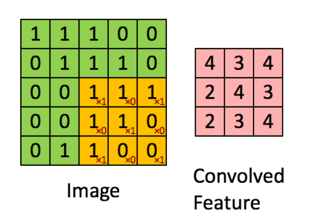
<table><tr>
    <td width=550>
        <center>
            <br>
            Figure 1.  Current and projected survey size evolution.
        </center>
    </td>
</tr></table>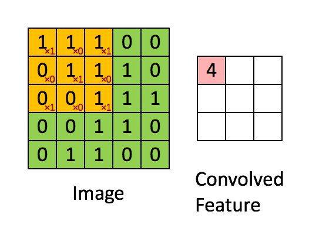
<table><tr>
    <td width=550>
        <center>
            <br>
            Figure 2. Convoluting a 5x5x1 image with a 3x3x1 kernel to get a 3x3x1 convolved feature. The kernel (shown in yellow) takes into account only the pixels in the two diagonals (marked as 'x1' in the lower right corner of the yellow matrix). Therefore, in the first (frozen) image there are 9 pixels with the kernel considering 5 of them with values : 1+1+0+1+1 = 4 (the value transfered to the convoled feature).
        </center>
    </td>
</tr></table>
<p>The kernel is not necessary to move one pixel at a time. By changing the <em>stride</em> we can select any kind of movement, which includes both the width and the height. A (1,1) stride will move one pixel right (stating always from the top left corner) and after completing the row it will move one pixel down (and left again). A (2,2) will do the similar thing but with two pixels moves. However, in this case we also <strong>downsampling</strong> the extracted feature.</p>
</section>
<section id="activation-function">
<h3>Activation function<a class="headerlink" href="#activation-function" title="Link to this heading">#</a></h3>
<p>The function used to impose a non-linear transformation to the input data. Perhaps the most typical one used is the ReLU (Rectified Linear Unit), which has the advantage of not activating all neurons at the same time.</p>
</section>
<section id="pooling">
<h3>Pooling<a class="headerlink" href="#pooling" title="Link to this heading">#</a></h3>
<p>Sometimes data is big and we want to speed up the process. Can we <em>pool</em> some cells together to reduce our data size between convolutions? Yes! The technique is called (obviously…) <em>pooling</em> and it can be performed by either taking the average of all the pixels that the pooling layer is over the feature layer (<strong>average pooling</strong>) or the maximum value found in any of the pixels (<strong>max pooling</strong>).</p>
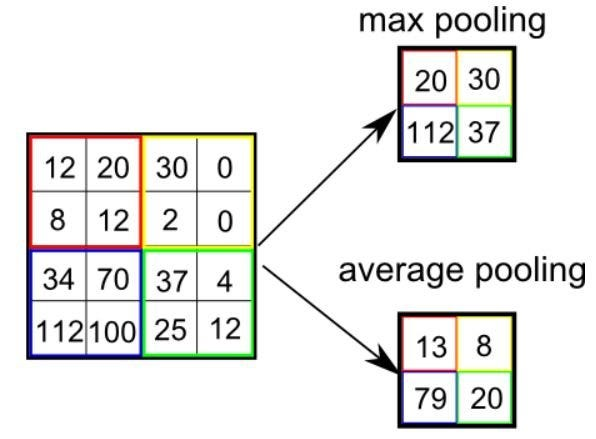
<table><tr>
    <td width=550>
        <center>
            <br>
            Figure 3. Examples of max and average pooling. 
        </center>
    </td>
</tr></table>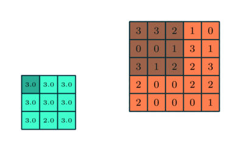
<table><tr>
    <td width=550>
        <center>
            <br>
            Figure 4. A 3x3 max pooling acting over a 5x5 feature map. 
        </center>
    </td>
</tr></table>
<p>The benefits of pooling layers are: i. the <strong>decrease of dimensions</strong> that help the decrease the computational power, ii. they extract the most <strong>dominant features which are rotational and positional invariant</strong>.</p>
<p>There are two flavors of pooling layers, either local (with dimensions smaller that the feature dimensions) or <em>global</em> that act on the whole feature layer (and they actually convert it to a single value), which is more aggressive.</p>
</section>
<section id="fully-connected-layer">
<h3>Fully connected layer<a class="headerlink" href="#fully-connected-layer" title="Link to this heading">#</a></h3>
<p>This is the fundamental layer where each neuron in the layer is connected to every neuron in the previous layer. This type of layer is also known as a dense layer because each neuron is connected to all neurons in the preceding layer.</p>
</section>
<section id="dropout">
<h3>Dropout<a class="headerlink" href="#dropout" title="Link to this heading">#</a></h3>
<p>One way to prevent overfitting is the dropout method - remove individual nodes from the network (with some probability) at each training stage. This could be at the level of the input node or at hidden layers.</p>
</section>
</section>
<section id="example-classification-networks">
<h2>Example classification networks<a class="headerlink" href="#example-classification-networks" title="Link to this heading">#</a></h2>
<p>AlexNet &amp; LeNet: image classification networks - “In ImageNet Large Scale Visual Recognition Challenge (ILSVRC) 2010, AlexNet was trained to classify 1.2 million high-resolution images into 1000 different classes. It achieved top-1 and top-5 error rates of 37.5% and 17%, which outperforms state-of-the-art methods at that time.” <a class="reference external" href="https://medium.com/mlearning-ai/alexnet-and-image-classification-8cd8511548b4">article</a></p>
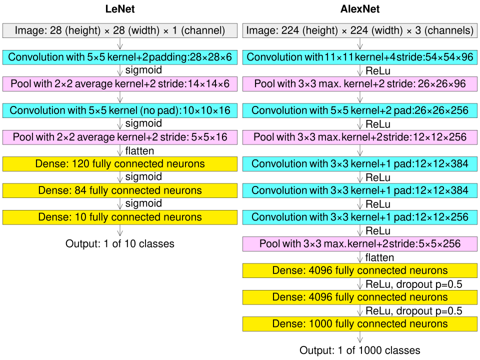
<table><tr>
    <td width=600>
        <center>
            <br>
            Figure 5. Examples of image classification networks/
        </center>
    </td>
</tr></table>
</section>
<section id="visualization-of-layers">
<h2>Visualization of layers<a class="headerlink" href="#visualization-of-layers" title="Link to this heading">#</a></h2>
<p>There follow a few links that help to visualize how CNN works:</p>
<ul class="simple">
<li><p><a class="reference external" href="https://poloclub.github.io/cnn-explainer/">CNN explainer</a></p></li>
<li><p><a class="reference external" href="https://cs.stanford.edu/people/karpathy/convnetjs/demo/mnist.html">CNN demo on MNIST dataset</a></p></li>
</ul>
</section>
<section id="one-hot-encoding">
<h2>One-hot encoding<a class="headerlink" href="#one-hot-encoding" title="Link to this heading">#</a></h2>
<p>One-hot encoding is a data preprocessing technique that <strong>converts categorical variables into a binary numerical format</strong> suitable for machine learning algorithms. It works by creating a new binary column for each unique category in a feature, where a value of 1 indicates the presence of that category and 0 indicates its absence.</p>
<p>For example if we have three categories (0, 1, or 2) then each class (label) will become a vector of length 3, where exactly one entry is 1 (the true class) and the rest are 0.</p>
<div class="pst-scrollable-table-container"><table class="table">
<thead>
<tr class="row-odd"><th class="head"><p>Label</p></th>
<th class="head"><p>One-hot</p></th>
</tr>
</thead>
<tbody>
<tr class="row-even"><td><p>0</p></td>
<td><p>[1, 0, 0]</p></td>
</tr>
<tr class="row-odd"><td><p>1</p></td>
<td><p>[0, 1, 0]</p></td>
</tr>
<tr class="row-even"><td><p>2</p></td>
<td><p>[0, 0, 1]</p></td>
</tr>
</tbody>
</table>
</div>
<p><strong>Why to do it?</strong></p>
<ul class="simple">
<li><p>Converts categorical values into binary columns</p></li>
<li><p>Prevents models from assuming an incorrect order between categories</p></li>
<li><p>Improves machine learning model performance</p></li>
<li><p>Helps capture relationships between categorical features</p></li>
<li><p>Required for many machine learning algorithms that accept numerical input only</p></li>
</ul>
</section>
<section id="on-learning-curves">
<h2>On learning curves<a class="headerlink" href="#on-learning-curves" title="Link to this heading">#</a></h2>
<p>Check out this <a class="reference external" href="https://machinelearningmastery.com/learning-curves-for-diagnosing-machine-learning-model-performance/">quick guide</a> on the various cases of learning curves !</p>
</section>
</section>
<section class="tex2jax_ignore mathjax_ignore" id="galaxy-morphology-estimation">
<h1>Galaxy morphology estimation<a class="headerlink" href="#galaxy-morphology-estimation" title="Link to this heading">#</a></h1>
<div style="border-left: 5px solid #FFA500; background-color: rgba(255, 165, 0, 0.15); padding: 10px; border-radius: 4px; color: inherit;">
<p><strong>Exercise 1:</strong></p>
<p><strong>Objective:</strong> Build a CNN model to classify stars, spiral and elliplical galaxies.</p>
<p><strong>Task:</strong> Using synthetic data (images with noise), follow these steps:</p>
<ul class="simple">
<li><p>load data</p></li>
<li><p>split data (train/validation/test)</p></li>
<li><p>build model</p></li>
<li><p>train the model</p></li>
<li><p>evaluate its performance</p></li>
<li><p>check some intermediate steps.</p></li>
</ul>
</div><p>Helpful functions</p>
<div class="cell docutils container">
<div class="cell_input docutils container">
<div class="highlight-ipython3 notranslate"><div class="highlight"><pre><span></span><span class="k">class</span><span class="w"> </span><span class="nc">PlotLosses</span><span class="p">(</span><span class="n">keras</span><span class="o">.</span><span class="n">callbacks</span><span class="o">.</span><span class="n">Callback</span><span class="p">):</span>
    <span class="k">def</span><span class="w"> </span><span class="nf">on_train_begin</span><span class="p">(</span><span class="bp">self</span><span class="p">,</span> <span class="n">logs</span><span class="o">=</span><span class="p">{}):</span>
        <span class="bp">self</span><span class="o">.</span><span class="n">i</span> <span class="o">=</span> <span class="mi">0</span>
        <span class="bp">self</span><span class="o">.</span><span class="n">x</span> <span class="o">=</span> <span class="p">[]</span>
        <span class="bp">self</span><span class="o">.</span><span class="n">losses</span> <span class="o">=</span> <span class="p">[]</span>
        <span class="bp">self</span><span class="o">.</span><span class="n">val_losses</span> <span class="o">=</span> <span class="p">[]</span>
        <span class="bp">self</span><span class="o">.</span><span class="n">losses2</span> <span class="o">=</span> <span class="p">[]</span>
        <span class="bp">self</span><span class="o">.</span><span class="n">val_losses2</span> <span class="o">=</span> <span class="p">[]</span>
        
        <span class="bp">self</span><span class="o">.</span><span class="n">fig</span> <span class="o">=</span> <span class="n">plt</span><span class="o">.</span><span class="n">figure</span><span class="p">()</span>
        
        <span class="bp">self</span><span class="o">.</span><span class="n">logs</span> <span class="o">=</span> <span class="p">[]</span>

    <span class="k">def</span><span class="w"> </span><span class="nf">on_epoch_end</span><span class="p">(</span><span class="bp">self</span><span class="p">,</span> <span class="n">epoch</span><span class="p">,</span> <span class="n">logs</span><span class="o">=</span><span class="p">{}):</span>
        <span class="bp">self</span><span class="o">.</span><span class="n">logs</span><span class="o">.</span><span class="n">append</span><span class="p">(</span><span class="n">logs</span><span class="p">)</span>
        <span class="bp">self</span><span class="o">.</span><span class="n">x</span><span class="o">.</span><span class="n">append</span><span class="p">(</span><span class="bp">self</span><span class="o">.</span><span class="n">i</span><span class="p">)</span>
        <span class="bp">self</span><span class="o">.</span><span class="n">losses</span><span class="o">.</span><span class="n">append</span><span class="p">(</span><span class="n">logs</span><span class="o">.</span><span class="n">get</span><span class="p">(</span><span class="s1">&#39;loss&#39;</span><span class="p">))</span>
        <span class="bp">self</span><span class="o">.</span><span class="n">val_losses</span><span class="o">.</span><span class="n">append</span><span class="p">(</span><span class="n">logs</span><span class="o">.</span><span class="n">get</span><span class="p">(</span><span class="s1">&#39;val_loss&#39;</span><span class="p">))</span>
        <span class="bp">self</span><span class="o">.</span><span class="n">losses2</span><span class="o">.</span><span class="n">append</span><span class="p">(</span><span class="n">logs</span><span class="o">.</span><span class="n">get</span><span class="p">(</span><span class="s1">&#39;categorical_accuracy&#39;</span><span class="p">))</span>
        <span class="bp">self</span><span class="o">.</span><span class="n">val_losses2</span><span class="o">.</span><span class="n">append</span><span class="p">(</span><span class="n">logs</span><span class="o">.</span><span class="n">get</span><span class="p">(</span><span class="s1">&#39;val_categorical_accuracy&#39;</span><span class="p">))</span>

        <span class="bp">self</span><span class="o">.</span><span class="n">i</span> <span class="o">+=</span> <span class="mi">1</span>
        
        <span class="n">clear_output</span><span class="p">(</span><span class="n">wait</span><span class="o">=</span><span class="kc">True</span><span class="p">)</span>
        <span class="n">plt</span><span class="o">.</span><span class="n">subplot</span><span class="p">(</span><span class="mi">1</span><span class="p">,</span><span class="mi">2</span><span class="p">,</span><span class="mi">1</span><span class="p">)</span>
        <span class="n">plt</span><span class="o">.</span><span class="n">plot</span><span class="p">(</span><span class="bp">self</span><span class="o">.</span><span class="n">x</span><span class="p">,</span> <span class="bp">self</span><span class="o">.</span><span class="n">losses2</span><span class="p">,</span> <span class="n">label</span><span class="o">=</span><span class="s2">&quot;Training accuracy&quot;</span><span class="p">,</span><span class="n">linestyle</span><span class="o">=</span><span class="s1">&#39;-&#39;</span><span class="p">)</span>
        <span class="n">plt</span><span class="o">.</span><span class="n">plot</span><span class="p">(</span><span class="bp">self</span><span class="o">.</span><span class="n">x</span><span class="p">,</span> <span class="bp">self</span><span class="o">.</span><span class="n">val_losses2</span><span class="p">,</span> <span class="n">label</span><span class="o">=</span><span class="s2">&quot;Validation accuracy&quot;</span><span class="p">,</span><span class="n">linestyle</span><span class="o">=</span><span class="s1">&#39;--&#39;</span><span class="p">)</span>
        <span class="n">plt</span><span class="o">.</span><span class="n">ylim</span><span class="p">(</span><span class="mi">0</span><span class="p">,</span><span class="mi">1</span><span class="p">)</span>
        <span class="n">plt</span><span class="o">.</span><span class="n">legend</span><span class="p">()</span>
        <span class="n">plt</span><span class="o">.</span><span class="n">xlabel</span><span class="p">(</span><span class="s1">&#39;Epoch&#39;</span><span class="p">)</span>
        <span class="n">plt</span><span class="o">.</span><span class="n">ylabel</span><span class="p">(</span><span class="s1">&#39;Accuracy&#39;</span><span class="p">)</span>
        
        <span class="n">plt</span><span class="o">.</span><span class="n">subplot</span><span class="p">(</span><span class="mi">1</span><span class="p">,</span><span class="mi">2</span><span class="p">,</span><span class="mi">2</span><span class="p">)</span>
        <span class="n">plt</span><span class="o">.</span><span class="n">plot</span><span class="p">(</span><span class="bp">self</span><span class="o">.</span><span class="n">x</span><span class="p">,</span> <span class="bp">self</span><span class="o">.</span><span class="n">losses</span><span class="p">,</span> <span class="n">label</span><span class="o">=</span><span class="s2">&quot;Training loss&quot;</span><span class="p">,</span><span class="n">linestyle</span><span class="o">=</span><span class="s1">&#39;-&#39;</span><span class="p">)</span>
        <span class="n">plt</span><span class="o">.</span><span class="n">plot</span><span class="p">(</span><span class="bp">self</span><span class="o">.</span><span class="n">x</span><span class="p">,</span> <span class="bp">self</span><span class="o">.</span><span class="n">val_losses</span><span class="p">,</span> <span class="n">label</span><span class="o">=</span><span class="s2">&quot;Validation loss&quot;</span><span class="p">,</span><span class="n">linestyle</span><span class="o">=</span><span class="s1">&#39;--&#39;</span><span class="p">)</span>

        <span class="n">plt</span><span class="o">.</span><span class="n">legend</span><span class="p">()</span>
        <span class="n">plt</span><span class="o">.</span><span class="n">xlabel</span><span class="p">(</span><span class="s1">&#39;Epoch&#39;</span><span class="p">)</span>
        <span class="n">plt</span><span class="o">.</span><span class="n">ylabel</span><span class="p">(</span><span class="s1">&#39;Loss&#39;</span><span class="p">)</span>
        
        <span class="n">plt</span><span class="o">.</span><span class="n">tight_layout</span><span class="p">()</span>
        
        <span class="n">plt</span><span class="o">.</span><span class="n">show</span><span class="p">();</span>
        
<span class="n">plot_losses</span> <span class="o">=</span> <span class="n">PlotLosses</span><span class="p">()</span>
</pre></div>
</div>
</div>
</div>
<div class="cell docutils container">
<div class="cell_input docutils container">
<div class="highlight-ipython3 notranslate"><div class="highlight"><pre><span></span><span class="k">def</span><span class="w"> </span><span class="nf">show_images</span><span class="p">(</span><span class="n">images</span><span class="p">,</span><span class="n">galaxy_labels</span><span class="p">):</span>
    <span class="n">fig</span> <span class="o">=</span> <span class="n">plt</span><span class="o">.</span><span class="n">figure</span><span class="p">()</span>
    <span class="n">plt</span><span class="o">.</span><span class="n">subplot</span><span class="p">(</span><span class="mi">1</span><span class="p">,</span><span class="mi">3</span><span class="p">,</span><span class="mi">1</span><span class="p">)</span>
    <span class="n">plt</span><span class="o">.</span><span class="n">title</span><span class="p">(</span><span class="n">label_trans</span><span class="p">(</span><span class="n">galaxy_labels</span><span class="p">[</span><span class="mi">0</span><span class="p">]))</span>
    <span class="n">plt</span><span class="o">.</span><span class="n">imshow</span><span class="p">(</span><span class="n">images</span><span class="p">[</span><span class="mi">0</span><span class="p">,:,:,</span><span class="mi">0</span><span class="p">],</span> <span class="n">vmax</span><span class="o">=</span><span class="mi">255</span><span class="p">)</span>
    <span class="n">plt</span><span class="o">.</span><span class="n">axis</span><span class="p">(</span><span class="s1">&#39;off&#39;</span><span class="p">)</span>
    <span class="n">plt</span><span class="o">.</span><span class="n">subplot</span><span class="p">(</span><span class="mi">1</span><span class="p">,</span><span class="mi">3</span><span class="p">,</span><span class="mi">2</span><span class="p">)</span>
    <span class="n">plt</span><span class="o">.</span><span class="n">imshow</span><span class="p">(</span><span class="n">images</span><span class="p">[</span><span class="mi">0</span><span class="p">,:,:,</span><span class="mi">1</span><span class="p">],</span> <span class="n">vmax</span><span class="o">=</span><span class="mi">255</span><span class="p">)</span>
    <span class="n">plt</span><span class="o">.</span><span class="n">axis</span><span class="p">(</span><span class="s1">&#39;off&#39;</span><span class="p">)</span>
    <span class="n">plt</span><span class="o">.</span><span class="n">subplot</span><span class="p">(</span><span class="mi">1</span><span class="p">,</span><span class="mi">3</span><span class="p">,</span><span class="mi">3</span><span class="p">)</span>
    <span class="n">plt</span><span class="o">.</span><span class="n">imshow</span><span class="p">(</span><span class="n">images</span><span class="p">[</span><span class="mi">0</span><span class="p">,:,:,</span><span class="mi">2</span><span class="p">],</span> <span class="n">vmax</span><span class="o">=</span><span class="mi">255</span><span class="p">)</span>
    <span class="n">plt</span><span class="o">.</span><span class="n">axis</span><span class="p">(</span><span class="s1">&#39;off&#39;</span><span class="p">)</span>

    <span class="n">fig</span> <span class="o">=</span> <span class="n">plt</span><span class="o">.</span><span class="n">figure</span><span class="p">()</span>
    <span class="n">plt</span><span class="o">.</span><span class="n">subplot</span><span class="p">(</span><span class="mi">1</span><span class="p">,</span><span class="mi">3</span><span class="p">,</span><span class="mi">1</span><span class="p">)</span>
    <span class="n">plt</span><span class="o">.</span><span class="n">title</span><span class="p">(</span><span class="n">label_trans</span><span class="p">(</span><span class="n">galaxy_labels</span><span class="p">[</span><span class="mi">1</span><span class="p">]))</span>
    <span class="n">plt</span><span class="o">.</span><span class="n">imshow</span><span class="p">(</span><span class="n">images</span><span class="p">[</span><span class="mi">1</span><span class="p">,:,:,</span><span class="mi">0</span><span class="p">],</span> <span class="n">vmax</span><span class="o">=</span><span class="mi">255</span><span class="p">)</span>
    <span class="n">plt</span><span class="o">.</span><span class="n">axis</span><span class="p">(</span><span class="s1">&#39;off&#39;</span><span class="p">)</span>
    <span class="n">plt</span><span class="o">.</span><span class="n">subplot</span><span class="p">(</span><span class="mi">1</span><span class="p">,</span><span class="mi">3</span><span class="p">,</span><span class="mi">2</span><span class="p">)</span>
    <span class="n">plt</span><span class="o">.</span><span class="n">imshow</span><span class="p">(</span><span class="n">images</span><span class="p">[</span><span class="mi">1</span><span class="p">,:,:,</span><span class="mi">1</span><span class="p">],</span> <span class="n">vmax</span><span class="o">=</span><span class="mi">255</span><span class="p">)</span>
    <span class="n">plt</span><span class="o">.</span><span class="n">axis</span><span class="p">(</span><span class="s1">&#39;off&#39;</span><span class="p">)</span>
    <span class="n">plt</span><span class="o">.</span><span class="n">subplot</span><span class="p">(</span><span class="mi">1</span><span class="p">,</span><span class="mi">3</span><span class="p">,</span><span class="mi">3</span><span class="p">)</span>
    <span class="n">plt</span><span class="o">.</span><span class="n">imshow</span><span class="p">(</span><span class="n">images</span><span class="p">[</span><span class="mi">1</span><span class="p">,:,:,</span><span class="mi">2</span><span class="p">],</span> <span class="n">vmax</span><span class="o">=</span><span class="mi">255</span><span class="p">)</span>
    <span class="n">plt</span><span class="o">.</span><span class="n">axis</span><span class="p">(</span><span class="s1">&#39;off&#39;</span><span class="p">)</span>

    <span class="n">fig</span> <span class="o">=</span> <span class="n">plt</span><span class="o">.</span><span class="n">figure</span><span class="p">()</span>
    <span class="n">plt</span><span class="o">.</span><span class="n">subplot</span><span class="p">(</span><span class="mi">1</span><span class="p">,</span><span class="mi">3</span><span class="p">,</span><span class="mi">1</span><span class="p">)</span>
    <span class="n">plt</span><span class="o">.</span><span class="n">title</span><span class="p">(</span><span class="n">label_trans</span><span class="p">(</span><span class="n">galaxy_labels</span><span class="p">[</span><span class="mi">5</span><span class="p">]))</span>
    <span class="n">plt</span><span class="o">.</span><span class="n">imshow</span><span class="p">(</span><span class="n">images</span><span class="p">[</span><span class="mi">5</span><span class="p">,:,:,</span><span class="mi">0</span><span class="p">],</span> <span class="n">vmax</span><span class="o">=</span><span class="mi">255</span><span class="p">)</span>
    <span class="n">plt</span><span class="o">.</span><span class="n">axis</span><span class="p">(</span><span class="s1">&#39;off&#39;</span><span class="p">)</span>
    <span class="n">plt</span><span class="o">.</span><span class="n">subplot</span><span class="p">(</span><span class="mi">1</span><span class="p">,</span><span class="mi">3</span><span class="p">,</span><span class="mi">2</span><span class="p">)</span>
    <span class="n">plt</span><span class="o">.</span><span class="n">imshow</span><span class="p">(</span><span class="n">images</span><span class="p">[</span><span class="mi">5</span><span class="p">,:,:,</span><span class="mi">1</span><span class="p">],</span> <span class="n">vmax</span><span class="o">=</span><span class="mi">255</span><span class="p">)</span>
    <span class="n">plt</span><span class="o">.</span><span class="n">axis</span><span class="p">(</span><span class="s1">&#39;off&#39;</span><span class="p">)</span>
    <span class="n">plt</span><span class="o">.</span><span class="n">subplot</span><span class="p">(</span><span class="mi">1</span><span class="p">,</span><span class="mi">3</span><span class="p">,</span><span class="mi">3</span><span class="p">)</span>
    <span class="n">plt</span><span class="o">.</span><span class="n">imshow</span><span class="p">(</span><span class="n">images</span><span class="p">[</span><span class="mi">5</span><span class="p">,:,:,</span><span class="mi">2</span><span class="p">],</span> <span class="n">vmax</span><span class="o">=</span><span class="mi">255</span><span class="p">)</span>
    <span class="n">plt</span><span class="o">.</span><span class="n">axis</span><span class="p">(</span><span class="s1">&#39;off&#39;</span><span class="p">)</span>
</pre></div>
</div>
</div>
</div>
<div class="cell docutils container">
<div class="cell_input docutils container">
<div class="highlight-ipython3 notranslate"><div class="highlight"><pre><span></span><span class="k">def</span><span class="w"> </span><span class="nf">label_trans</span><span class="p">(</span><span class="n">label_id</span><span class="p">):</span>
    <span class="k">if</span> <span class="n">label_id</span><span class="o">==</span><span class="mi">0</span><span class="p">:</span> <span class="k">return</span> <span class="s2">&quot;star&quot;</span>
    <span class="k">if</span> <span class="n">label_id</span><span class="o">==</span><span class="mi">1</span><span class="p">:</span> <span class="k">return</span> <span class="s2">&quot;spiral galaxy&quot;</span>
    <span class="k">if</span> <span class="n">label_id</span><span class="o">==</span><span class="mi">2</span><span class="p">:</span> <span class="k">return</span> <span class="s2">&quot;elliptical galaxy&quot;</span>
    <span class="k">else</span><span class="p">:</span> <span class="k">return</span> <span class="s2">&quot;unknown&quot;</span>  
</pre></div>
</div>
</div>
</div>
<section id="load-the-data">
<h2>Load the data<a class="headerlink" href="#load-the-data" title="Link to this heading">#</a></h2>
<p><strong>data</strong>: are images at different wavelenghts i.e. 3D with 2 spatial (41x41 pixels) and 1 spectral (3 bands) dimension<br />
<strong>labels</strong>: take values 0: star, 1: spiral galaxy, 2: elliptical galaxy</p>
<div class="cell docutils container">
<div class="cell_input docutils container">
<div class="highlight-ipython3 notranslate"><div class="highlight"><pre><span></span><span class="k">with</span> <span class="n">np</span><span class="o">.</span><span class="n">load</span><span class="p">(</span><span class="s1">&#39;data/galaxy_cubes.npz&#39;</span><span class="p">)</span> <span class="k">as</span> <span class="n">data</span><span class="p">:</span>
    <span class="n">images</span> <span class="o">=</span> <span class="n">data</span><span class="p">[</span><span class="s1">&#39;images&#39;</span><span class="p">]</span>
    <span class="n">galaxy_labels</span> <span class="o">=</span> <span class="n">data</span><span class="p">[</span><span class="s1">&#39;labels&#39;</span><span class="p">]</span>

<span class="nb">print</span><span class="p">([</span><span class="n">images</span><span class="o">.</span><span class="n">shape</span><span class="p">,</span> <span class="n">galaxy_labels</span><span class="o">.</span><span class="n">shape</span><span class="p">])</span>

<span class="n">show_images</span><span class="p">(</span><span class="n">images</span><span class="p">,</span><span class="n">galaxy_labels</span><span class="p">)</span> 
</pre></div>
</div>
</div>
<div class="cell_output docutils container">
<div class="output stream highlight-myst-ansi notranslate"><div class="highlight"><pre><span></span>[(10000, 41, 41, 3), (10000,)]
</pre></div>
</div>
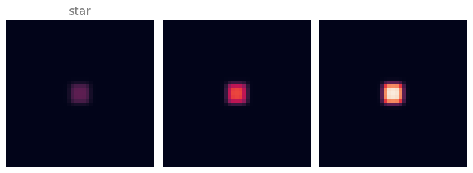
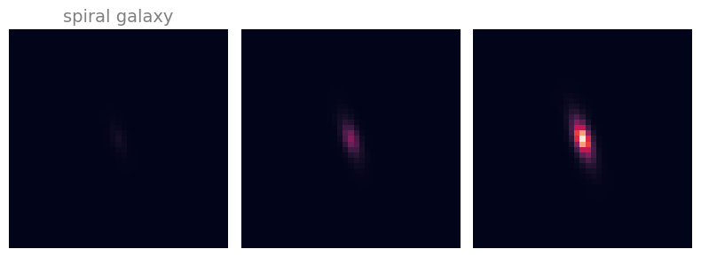
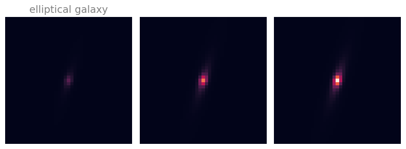
</div>
</div>
</section>
<section id="add-white-noise-to-observations">
<h2>Add white noise to observations<a class="headerlink" href="#add-white-noise-to-observations" title="Link to this heading">#</a></h2>
<div class="cell docutils container">
<div class="cell_input docutils container">
<div class="highlight-ipython3 notranslate"><div class="highlight"><pre><span></span><span class="n">images</span><span class="o">=</span> <span class="n">images</span><span class="o">+</span><span class="n">np</span><span class="o">.</span><span class="n">random</span><span class="o">.</span><span class="n">randn</span><span class="p">(</span><span class="mi">10000</span><span class="p">,</span><span class="mi">41</span><span class="p">,</span><span class="mi">41</span><span class="p">,</span><span class="mi">3</span><span class="p">)</span><span class="o">*</span><span class="mi">20</span>
<span class="n">images</span><span class="o">=</span> <span class="n">np</span><span class="o">.</span><span class="n">clip</span><span class="p">(</span><span class="n">images</span><span class="p">,</span> <span class="mi">0</span><span class="p">,</span> <span class="mi">255</span><span class="p">)</span>

<span class="n">show_images</span><span class="p">(</span><span class="n">images</span><span class="p">,</span><span class="n">galaxy_labels</span><span class="p">)</span> 
</pre></div>
</div>
</div>
<div class="cell_output docutils container">
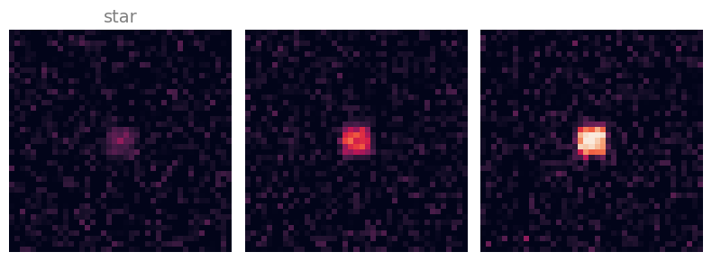
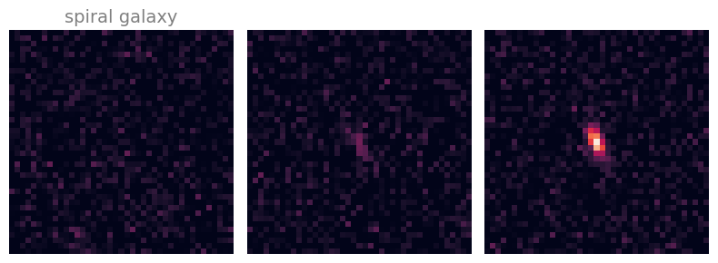
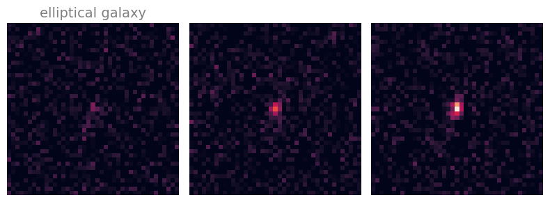
</div>
</div>
</section>
<section id="create-training-and-testing-validation-dataset">
<h2>Create training and testing (validation) dataset<a class="headerlink" href="#create-training-and-testing-validation-dataset" title="Link to this heading">#</a></h2>
<div style="border-left: 5px solid #FFA500; background-color: rgba(255, 165, 0, 0.15); padding: 10px; border-radius: 4px; color: inherit;">
<p><strong>Task:</strong> Split the sample into train/validation/test</p>
</div>
<p><em>HINT:</em> to test various architectures fast keep the train/test sizes rather <strong>small</strong>, i.e. use a huge fraction for test to get a very small number for train+validation (a few hundrends). At the end you would like to retrain with the <strong>full dataset</strong> (that will take some time).</p>
<div class="cell docutils container">
<div class="cell_input docutils container">
<div class="highlight-ipython3 notranslate"><div class="highlight"><pre><span></span><span class="c1"># using two times the train_test_split to get initially </span>
<span class="c1"># the test sample and then train and validation.</span>
<span class="c1"># </span>
<span class="c1"># you can use random_state if you want to reproduce the same exact splits</span>
<span class="c1"># and shuffle if you want to mix the data before splits</span>

<span class="n">X_train_full</span><span class="p">,</span> <span class="n">X_test_img</span><span class="p">,</span> <span class="n">y_train_full_lbl</span><span class="p">,</span> <span class="n">y_test_lbl</span> <span class="o">=</span> <span class="n">train_test_split</span><span class="p">(</span>
        <span class="o">...</span> <span class="p">,</span> <span class="o">...</span><span class="p">,</span> <span class="n">test_size</span><span class="o">=</span> <span class="mf">0.95</span><span class="p">)</span> <span class="c1">#, shuffle = True, random_state=42)      # 0.95 to speed up training</span>

<span class="c1"># split into train and validation</span>
<span class="n">X_train_img</span><span class="p">,</span> <span class="n">X_valid_img</span><span class="p">,</span> <span class="n">y_train_lbl</span><span class="p">,</span> <span class="n">y_valid_lbl</span> <span class="o">=</span> <span class="n">train_test_split</span><span class="p">(</span>
        <span class="o">...</span> <span class="p">,</span> <span class="o">...</span> <span class="p">,</span> <span class="n">test_size</span><span class="o">=</span> <span class="o">...</span><span class="p">)</span> <span class="c1">#, shuffle = True, random_state=24 )</span>

<span class="nb">print</span><span class="p">(</span><span class="sa">f</span><span class="s1">&#39;From </span><span class="si">{</span><span class="nb">len</span><span class="p">(</span><span class="n">images</span><span class="p">)</span><span class="si">}</span><span class="s1"> images, we use as:&#39;</span><span class="p">)</span>
<span class="nb">print</span><span class="p">(</span><span class="sa">f</span><span class="s1">&#39;test: </span><span class="se">\t\t</span><span class="s1"> </span><span class="si">{</span><span class="nb">len</span><span class="p">(</span><span class="n">X_test_img</span><span class="p">)</span><span class="si">}</span><span class="s1">&#39;</span><span class="p">)</span>
<span class="nb">print</span><span class="p">(</span><span class="sa">f</span><span class="s1">&#39;train: </span><span class="se">\t\t</span><span class="s1">  </span><span class="si">{</span><span class="nb">len</span><span class="p">(</span><span class="n">X_train_img</span><span class="p">)</span><span class="si">}</span><span class="s1">&#39;</span><span class="p">)</span>
<span class="nb">print</span><span class="p">(</span><span class="sa">f</span><span class="s1">&#39;validation:</span><span class="se">\t</span><span class="s1">  </span><span class="si">{</span><span class="nb">len</span><span class="p">(</span><span class="n">X_valid_img</span><span class="p">)</span><span class="si">}</span><span class="s1">&#39;</span><span class="p">)</span>

<span class="c1"># NOTE: this is a data manipulation as keras needs the number of objects </span>
<span class="c1"># with properties at each &quot;channel&quot;, and their correspoding number. </span>
<span class="c1"># As keras thinks of images as RGB it uses 3 as last number. </span>
<span class="c1"># To avoid keras to assume anything add specifically &#39;,1&#39; at the end.</span>

<span class="n">X_train</span> <span class="o">=</span> <span class="n">X_train_img</span><span class="o">.</span><span class="n">reshape</span><span class="p">(</span><span class="nb">len</span><span class="p">(</span><span class="n">X_train_img</span><span class="p">),</span> <span class="n">images</span><span class="o">.</span><span class="n">shape</span><span class="p">[</span><span class="mi">1</span><span class="p">],</span><span class="n">images</span><span class="o">.</span><span class="n">shape</span><span class="p">[</span><span class="mi">2</span><span class="p">],</span><span class="n">images</span><span class="o">.</span><span class="n">shape</span><span class="p">[</span><span class="mi">3</span><span class="p">],</span><span class="mi">1</span><span class="p">)</span>
<span class="n">X_valid</span> <span class="o">=</span> <span class="n">X_valid_img</span><span class="o">.</span><span class="n">reshape</span><span class="p">(</span><span class="nb">len</span><span class="p">(</span><span class="n">X_valid_img</span><span class="p">),</span> <span class="n">images</span><span class="o">.</span><span class="n">shape</span><span class="p">[</span><span class="mi">1</span><span class="p">],</span><span class="n">images</span><span class="o">.</span><span class="n">shape</span><span class="p">[</span><span class="mi">2</span><span class="p">],</span><span class="n">images</span><span class="o">.</span><span class="n">shape</span><span class="p">[</span><span class="mi">3</span><span class="p">],</span><span class="mi">1</span><span class="p">)</span>
<span class="n">X_test</span>  <span class="o">=</span> <span class="n">X_test_img</span><span class="o">.</span><span class="n">reshape</span><span class="p">(</span><span class="nb">len</span><span class="p">(</span><span class="n">X_test_img</span><span class="p">),</span> <span class="n">images</span><span class="o">.</span><span class="n">shape</span><span class="p">[</span><span class="mi">1</span><span class="p">],</span><span class="n">images</span><span class="o">.</span><span class="n">shape</span><span class="p">[</span><span class="mi">2</span><span class="p">],</span><span class="n">images</span><span class="o">.</span><span class="n">shape</span><span class="p">[</span><span class="mi">3</span><span class="p">],</span><span class="mi">1</span><span class="p">)</span>


<span class="c1"># NOTE: converting labels to categorical representation, </span>
<span class="c1"># a vector whose position indicates its class</span>
<span class="c1"># 0: star, ---------------&gt; [1, 0, 0] </span>
<span class="c1"># 1: spiral galaxy, ------&gt; [0, 1, 0]</span>
<span class="c1"># 2: elliptical galaxy ---&gt; [0, 0, 1]   </span>
<span class="n">y_train</span> <span class="o">=</span> <span class="n">ult</span><span class="o">.</span><span class="n">to_categorical</span><span class="p">(</span><span class="n">y_train_lbl</span><span class="p">,</span><span class="n">num_classes</span><span class="o">=</span><span class="mi">3</span><span class="p">)</span>
<span class="n">y_valid</span> <span class="o">=</span> <span class="n">ult</span><span class="o">.</span><span class="n">to_categorical</span><span class="p">(</span><span class="n">y_valid_lbl</span><span class="p">,</span><span class="n">num_classes</span><span class="o">=</span><span class="mi">3</span><span class="p">)</span>
<span class="n">y_test</span>  <span class="o">=</span> <span class="n">ult</span><span class="o">.</span><span class="n">to_categorical</span><span class="p">(</span><span class="n">y_test_lbl</span><span class="p">,</span><span class="n">num_classes</span><span class="o">=</span><span class="mi">3</span><span class="p">)</span>
      
</pre></div>
</div>
</div>
</div>
</section>
<section id="define-network-layers-and-characteristics">
<h2>Define network layers and characteristics<a class="headerlink" href="#define-network-layers-and-characteristics" title="Link to this heading">#</a></h2>
<div style="border-left: 5px solid #FFA500; background-color: rgba(255, 165, 0, 0.15); padding: 10px; border-radius: 4px; color: inherit;">
<p><strong>Task:</strong> Build the CNN model.</p>
<ul class="simple">
<li><p>For this you need to apply a set of different CNN layers along with others such as pooling, dropout, etc.</p></li>
<li><p>Feel free to play around with the number and types of layers. Also adjust the number of nodes per layer, kernel size and strides.</p></li>
<li><p>How many nodes the last layer should have?</p></li>
</ul>
</div><p>The functional form to write the layers would be equivalent to this:</p>
<div class="highlight-python notranslate"><div class="highlight"><pre><span></span><span class="n">inputs</span> <span class="o">=</span> <span class="n">Input</span><span class="p">((</span><span class="n">images</span><span class="o">.</span><span class="n">shape</span><span class="p">[</span><span class="mi">1</span><span class="p">],</span> <span class="n">images</span><span class="o">.</span><span class="n">shape</span><span class="p">[</span><span class="mi">2</span><span class="p">],</span> <span class="n">images</span><span class="o">.</span><span class="n">shape</span><span class="p">[</span><span class="mi">3</span><span class="p">],</span> <span class="mi">1</span><span class="p">),</span><span class="n">name</span><span class="o">=</span><span class="s1">&#39;main_input&#39;</span><span class="p">)</span>

<span class="n">conv00</span>  <span class="o">=</span> <span class="n">Conv3D</span><span class="p">(</span> <span class="o">...</span> <span class="p">,</span> <span class="p">(</span><span class="mi">3</span><span class="p">,</span> <span class="mi">3</span><span class="p">,</span> <span class="mi">2</span><span class="p">),</span> <span class="n">strides</span><span class="o">=</span><span class="p">(</span><span class="mi">1</span><span class="p">,</span> <span class="mi">1</span><span class="p">,</span> <span class="mi">1</span><span class="p">),</span> <span class="n">padding</span><span class="o">=</span><span class="s1">&#39;same&#39;</span><span class="p">,</span> <span class="n">name</span><span class="o">=</span><span class="s1">&#39;conv00&#39;</span><span class="p">)(</span><span class="n">inputs</span><span class="p">)</span>
<span class="n">act00</span> <span class="o">=</span> <span class="n">Activation</span><span class="p">(</span><span class="s1">&#39;relu&#39;</span><span class="p">)(</span><span class="n">conv00</span><span class="p">)</span>
<span class="n">pool00</span>  <span class="o">=</span> <span class="n">MaxPooling3D</span><span class="p">(</span><span class="n">pool_size</span><span class="o">=</span><span class="p">(</span><span class="mi">3</span><span class="p">,</span> <span class="mi">3</span><span class="p">,</span> <span class="mi">1</span><span class="p">),</span> <span class="n">strides</span><span class="o">=</span><span class="p">(</span><span class="mi">2</span><span class="p">,</span> <span class="mi">2</span><span class="p">,</span> <span class="mi">1</span><span class="p">),</span> <span class="n">padding</span><span class="o">=</span><span class="s1">&#39;same&#39;</span><span class="p">)(</span><span class="n">act00</span><span class="p">)</span>
<span class="n">drop00</span> <span class="o">=</span> <span class="n">Dropout</span><span class="p">(</span><span class="mf">0.3</span><span class="p">)(</span><span class="n">pool00</span><span class="p">)</span>

<span class="o">...</span> <span class="n">more</span> <span class="n">layers</span> <span class="o">...</span>


<span class="n">fl0</span> <span class="o">=</span> <span class="n">Flatten</span><span class="p">(</span><span class="n">name</span><span class="o">=</span><span class="s1">&#39;fl0&#39;</span><span class="p">)(</span><span class="n">pool20</span><span class="p">)</span>
<span class="n">fc0</span> <span class="o">=</span> <span class="n">Dense</span><span class="p">(</span><span class="mi">32</span><span class="p">,</span><span class="n">activation</span><span class="o">=</span><span class="s1">&#39;linear&#39;</span><span class="p">)(</span><span class="n">fl0</span><span class="p">)</span>

<span class="o">...</span> <span class="n">more</span> <span class="n">layers</span> <span class="o">...</span>

<span class="c1"># do not remove!</span>
<span class="n">Dn0</span> <span class="o">=</span> <span class="n">Dense</span><span class="p">(</span> <span class="o">...</span> <span class="p">,</span> <span class="n">activation</span><span class="o">=</span><span class="s1">&#39;softmax&#39;</span><span class="p">,</span> <span class="n">name</span><span class="o">=</span><span class="s1">&#39;Dn0&#39;</span> <span class="p">)(</span><span class="n">fc0</span><span class="p">)</span>

<span class="n">my_model</span> <span class="o">=</span> <span class="n">Model</span><span class="p">(</span><span class="n">inputs</span><span class="o">=</span><span class="p">[</span><span class="n">inputs</span><span class="p">],</span> <span class="n">outputs</span><span class="o">=</span><span class="p">[</span><span class="n">Dn0</span><span class="p">])</span>
</pre></div>
</div>
<p>However, we can simplify this by performing all actions on the same variable, so that we do not get lost with all these variable names.</p>
<div class="cell docutils container">
<div class="cell_input docutils container">
<div class="highlight-ipython3 notranslate"><div class="highlight"><pre><span></span><span class="n">inputs</span> <span class="o">=</span> <span class="n">Input</span><span class="p">(</span><span class="n">shape</span><span class="o">=</span><span class="p">(</span><span class="n">images</span><span class="o">.</span><span class="n">shape</span><span class="p">[</span><span class="mi">1</span><span class="p">],</span> <span class="n">images</span><span class="o">.</span><span class="n">shape</span><span class="p">[</span><span class="mi">2</span><span class="p">],</span> <span class="n">images</span><span class="o">.</span><span class="n">shape</span><span class="p">[</span><span class="mi">3</span><span class="p">],</span> <span class="mi">1</span><span class="p">))</span>

<span class="n">x</span> <span class="o">=</span> <span class="n">Conv3D</span><span class="p">(</span> <span class="o">...</span> <span class="p">,</span>  <span class="p">(</span><span class="mi">3</span><span class="p">,</span><span class="mi">3</span><span class="p">,</span><span class="mi">2</span><span class="p">),</span> <span class="n">strides</span><span class="o">=</span><span class="p">(</span><span class="mi">1</span><span class="p">,</span> <span class="mi">1</span><span class="p">,</span> <span class="mi">1</span><span class="p">),</span> <span class="n">padding</span><span class="o">=</span><span class="s1">&#39;same&#39;</span><span class="p">)(</span><span class="n">inputs</span><span class="p">)</span>
<span class="n">x</span> <span class="o">=</span> <span class="n">Activation</span><span class="p">(</span><span class="s1">&#39;relu&#39;</span><span class="p">)(</span><span class="n">x</span><span class="p">)</span>
<span class="n">x</span> <span class="o">=</span> <span class="n">MaxPooling3D</span><span class="p">(</span><span class="n">pool_size</span><span class="o">=</span><span class="p">(</span><span class="mi">3</span><span class="p">,</span><span class="mi">3</span><span class="p">,</span><span class="mi">1</span><span class="p">),</span> <span class="n">strides</span><span class="o">=</span><span class="p">(</span><span class="mi">2</span><span class="p">,</span><span class="mi">2</span><span class="p">,</span><span class="mi">1</span><span class="p">),</span> <span class="n">padding</span><span class="o">=</span><span class="s1">&#39;same&#39;</span><span class="p">)(</span><span class="n">x</span><span class="p">)</span>

<span class="o">...</span> <span class="n">more</span> <span class="n">layers</span> <span class="o">...</span> <span class="o">?</span>

<span class="c1">#x = Dropout(0.3)(x)</span>

<span class="c1"># do not remove this</span>
<span class="n">x</span> <span class="o">=</span> <span class="n">Flatten</span><span class="p">()(</span><span class="n">x</span><span class="p">)</span>
<span class="n">x</span> <span class="o">=</span> <span class="n">Dense</span><span class="p">(</span> <span class="o">...</span><span class="p">,</span> <span class="n">activation</span><span class="o">=</span><span class="s1">&#39;relu&#39;</span><span class="p">)(</span><span class="n">x</span><span class="p">)</span>

<span class="o">...</span> <span class="n">more</span> <span class="n">layers</span> <span class="o">...</span> <span class="o">?</span>

<span class="n">out</span> <span class="o">=</span> <span class="n">Dense</span><span class="p">(</span> <span class="o">...</span> <span class="p">,</span> <span class="n">activation</span><span class="o">=</span><span class="s1">&#39;softmax&#39;</span><span class="p">)(</span><span class="n">x</span><span class="p">)</span>

<span class="n">my_model</span> <span class="o">=</span> <span class="n">Model</span><span class="p">(</span><span class="n">inputs</span><span class="o">=</span><span class="p">[</span><span class="n">inputs</span><span class="p">],</span> <span class="n">outputs</span><span class="o">=</span><span class="p">[</span><span class="n">out</span><span class="p">])</span>
</pre></div>
</div>
</div>
</div>
<p>Selecting Adam optimizer to compile the model.</p>
<p><em>HINT:</em> check the documentation (<a class="reference external" href="https://keras.io/api/metrics/accuracy_metrics/">keras:accuracy_metrics</a>) and remember that we are using the categorical labels.</p>
<div class="cell docutils container">
<div class="cell_input docutils container">
<div class="highlight-ipython3 notranslate"><div class="highlight"><pre><span></span><span class="n">my_model</span><span class="o">.</span><span class="n">compile</span><span class="p">(</span><span class="n">loss</span><span class="o">=</span><span class="s1">&#39;categorical_crossentropy&#39;</span><span class="p">,</span> 
                 <span class="n">optimizer</span><span class="o">=</span><span class="n">Adam</span><span class="p">(</span><span class="n">learning_rate</span><span class="o">=</span><span class="mf">1e-4</span><span class="p">),</span> 
                 <span class="n">metrics</span> <span class="o">=</span><span class="p">[</span><span class="s1">&#39;categorical_accuracy&#39;</span><span class="p">])</span>
<span class="n">my_model</span><span class="o">.</span><span class="n">summary</span><span class="p">()</span>
</pre></div>
</div>
</div>
</div>
</section>
<section id="train-the-network">
<h2>Train the network<a class="headerlink" href="#train-the-network" title="Link to this heading">#</a></h2>
<div style="border-left: 5px solid #FFA500; background-color: rgba(255, 165, 0, 0.15); padding: 10px; border-radius: 4px; color: inherit;">
<p><strong>Task:</strong> Fill the missing code to train the model</p>
</div>
<p><em>HINT:</em> You may increase the <strong>batch_size</strong>, and decrease the number of <strong>epochs</strong>, when testing in order to minimize the training time.</p>
<div class="cell docutils container">
<div class="cell_input docutils container">
<div class="highlight-ipython3 notranslate"><div class="highlight"><pre><span></span><span class="n">start_time</span> <span class="o">=</span> <span class="n">time</span><span class="o">.</span><span class="n">time</span><span class="p">()</span> 
                                                    
<span class="n">history</span><span class="o">=</span><span class="n">my_model</span><span class="o">.</span><span class="n">fit</span><span class="p">(</span> <span class="o">...</span> <span class="p">,</span> <span class="o">...</span> <span class="p">,</span> 
                    <span class="n">batch_size</span><span class="o">=</span> <span class="mi">64</span><span class="p">,</span> 
                    <span class="n">epochs</span><span class="o">=</span> <span class="o">...</span><span class="p">,</span>
                    <span class="n">validation_data</span><span class="o">=</span><span class="p">[</span> <span class="o">...</span> <span class="p">,</span> <span class="o">...</span> <span class="p">],</span>
                    <span class="n">callbacks</span><span class="o">=</span><span class="p">[</span><span class="n">plot_losses</span><span class="p">],</span><span class="n">shuffle</span><span class="o">=</span><span class="kc">True</span><span class="p">)</span>

<span class="n">elapsed_time</span> <span class="o">=</span> <span class="n">time</span><span class="o">.</span><span class="n">time</span><span class="p">()</span> <span class="o">-</span> <span class="n">start_time</span>
<span class="n">time</span><span class="o">.</span><span class="n">strftime</span><span class="p">(</span><span class="s2">&quot;%H:%M:%S&quot;</span><span class="p">,</span> <span class="n">time</span><span class="o">.</span><span class="n">gmtime</span><span class="p">(</span><span class="n">elapsed_time</span><span class="p">))</span>
</pre></div>
</div>
</div>
</div>
</section>
<section id="check-performance">
<h2>Check performance<a class="headerlink" href="#check-performance" title="Link to this heading">#</a></h2>
<div style="border-left: 5px solid #FFA500; background-color: rgba(255, 165, 0, 0.15); padding: 10px; border-radius: 4px; color: inherit;">
<p><strong>Task:</strong> evaluate the model (take care on which dataset!)</p>
</div>
<p><em>HINT</em>: if you want to speed up the process a bit select the number of TO objects of the test set (eg first 100).</p>
<div class="cell docutils container">
<div class="cell_input docutils container">
<div class="highlight-ipython3 notranslate"><div class="highlight"><pre><span></span><span class="n">TO</span> <span class="o">=</span> <span class="nb">len</span><span class="p">(</span><span class="n">X_test</span><span class="p">)</span> <span class="c1"># or smaller...</span>

<span class="n">ls</span><span class="p">,</span><span class="n">acc</span><span class="o">=</span><span class="n">my_model</span><span class="o">.</span><span class="n">evaluate</span><span class="p">(</span> <span class="n">X_test</span><span class="p">[</span><span class="mi">0</span><span class="p">:</span><span class="n">TO</span><span class="p">],</span> <span class="n">y_test</span><span class="p">[</span><span class="mi">0</span><span class="p">:</span><span class="n">TO</span><span class="p">])</span> 
<span class="nb">print</span><span class="p">(</span><span class="s2">&quot;Loss value: </span><span class="si">%.2f</span><span class="s2">&quot;</span> <span class="o">%</span> <span class="p">(</span><span class="n">ls</span><span class="p">))</span>  
<span class="nb">print</span><span class="p">(</span><span class="s2">&quot;Accuracy: </span><span class="si">%.1f</span><span class="s2">&quot;</span> <span class="o">%</span> <span class="p">(</span><span class="n">acc</span><span class="o">*</span><span class="mi">100</span><span class="p">))</span>   
</pre></div>
</div>
</div>
</div>
</section>
<section id="predict-label-for-particular-example">
<h2>Predict label for particular example<a class="headerlink" href="#predict-label-for-particular-example" title="Link to this heading">#</a></h2>
<div class="cell docutils container">
<div class="cell_input docutils container">
<div class="highlight-ipython3 notranslate"><div class="highlight"><pre><span></span><span class="c1"># select object</span>
<span class="n">obj</span> <span class="o">=</span> <span class="mi">33</span>        <span class="c1"># must be less than len( X_test)</span>

<span class="n">preds</span> <span class="o">=</span> <span class="n">my_model</span><span class="o">.</span><span class="n">predict</span><span class="p">(</span> <span class="n">X_test</span><span class="p">[</span><span class="n">obj</span><span class="p">:</span><span class="n">obj</span><span class="o">+</span><span class="mi">1</span><span class="p">,:,:,:,:])</span>
<span class="nb">print</span><span class="p">(</span><span class="sa">f</span><span class="s2">&quot;Probability per class: </span><span class="si">{</span><span class="s1">&#39;, &#39;</span><span class="o">.</span><span class="n">join</span><span class="p">([</span><span class="nb">str</span><span class="p">(</span><span class="n">i</span><span class="o">*</span><span class="mi">100</span><span class="p">)[</span><span class="mi">0</span><span class="p">:</span><span class="mi">5</span><span class="p">]</span><span class="o">+</span><span class="s1">&#39;%&#39;</span><span class="w"> </span><span class="k">for</span><span class="w"> </span><span class="n">i</span><span class="w"> </span><span class="ow">in</span><span class="w"> </span><span class="n">preds</span><span class="p">[</span><span class="mi">0</span><span class="p">]])</span><span class="si">}</span><span class="s2">&quot;</span><span class="p">)</span>
<span class="nb">print</span><span class="p">(</span><span class="sa">f</span><span class="s1">&#39;Highest for class: </span><span class="si">{</span><span class="n">label_trans</span><span class="p">(</span><span class="w"> </span><span class="n">np</span><span class="o">.</span><span class="n">argmax</span><span class="p">(</span><span class="n">preds</span><span class="p">))</span><span class="si">}</span><span class="s1">&#39;</span><span class="p">)</span>
</pre></div>
</div>
</div>
<div class="cell_output docutils container">
<div class="output stream highlight-myst-ansi notranslate"><div class="highlight"><pre><span></span><span class=" -Color -Color-Bold">1/1</span> <span class=" -Color -Color-Green">━━━━━━━━━━━━━━━━━━━━</span> <span class=" -Color -Color-Bold">0s</span> 96ms/step
Probability per class: 0.027%, 31.72%, 68.24%
Highest for class: elliptical galaxy
</pre></div>
</div>
</div>
</div>
</section>
<section id="print-the-activations-for-particular-inputs">
<h2>Print the activations for particular inputs<a class="headerlink" href="#print-the-activations-for-particular-inputs" title="Link to this heading">#</a></h2>
<p>Using <code class="docutils literal notranslate"><span class="pre">model.layers</span></code> we print all layers of the model.</p>
<div class="cell docutils container">
<div class="cell_input docutils container">
<div class="highlight-ipython3 notranslate"><div class="highlight"><pre><span></span><span class="n">my_model</span><span class="o">.</span><span class="n">layers</span>
</pre></div>
</div>
</div>
<div class="cell_output docutils container">
<div class="output text_plain highlight-myst-ansi notranslate"><div class="highlight"><pre><span></span>[&lt;InputLayer name=input_layer_7, built=True&gt;,
 &lt;Conv3D name=conv3d_23, built=True&gt;,
 &lt;Activation name=activation_23, built=True&gt;,
 &lt;MaxPooling3D name=max_pooling3d_23, built=True&gt;,
 &lt;Conv3D name=conv3d_24, built=True&gt;,
 &lt;Activation name=activation_24, built=True&gt;,
 &lt;MaxPooling3D name=max_pooling3d_24, built=True&gt;,
 &lt;Conv3D name=conv3d_25, built=True&gt;,
 &lt;Activation name=activation_25, built=True&gt;,
 &lt;MaxPooling3D name=max_pooling3d_25, built=True&gt;,
 &lt;Dropout name=dropout_8, built=True&gt;,
 &lt;Flatten name=flatten_7, built=True&gt;,
 &lt;Dense name=dense_21, built=True&gt;,
 &lt;Dense name=dense_22, built=True&gt;,
 &lt;Dense name=dense_23, built=True&gt;]
</pre></div>
</div>
</div>
</div>
<p>We can select for which one to print the activations.</p>
<p>_HINT: select convolutional layers to check them.</p>
<div class="cell docutils container">
<div class="cell_input docutils container">
<div class="highlight-ipython3 notranslate"><div class="highlight"><pre><span></span><span class="n">sel_layer</span> <span class="o">=</span> <span class="mi">1</span>  <span class="c1"># eg 1</span>

<span class="n">my_model</span><span class="o">.</span><span class="n">layers</span><span class="p">[</span><span class="n">sel_layer</span><span class="p">]</span>
</pre></div>
</div>
</div>
<div class="cell_output docutils container">
<div class="output text_plain highlight-myst-ansi notranslate"><div class="highlight"><pre><span></span>&lt;Conv3D name=conv3d_23, built=True&gt;
</pre></div>
</div>
</div>
</div>
<p>Selecting a random sample to present.</p>
<p><em>HINT: to avoid issues with plots check that the number of nodes in the concolution layer is properly trasnfered to the plotting for-loop of activation layers</em></p>
<p>_Compare this with what we see with the <a class="reference external" href="https://poloclub.github.io/cnn-explainer/">CNN explainer</a>.</p>
<div class="cell docutils container">
<div class="cell_input docutils container">
<div class="highlight-ipython3 notranslate"><div class="highlight"><pre><span></span><span class="n">s</span> <span class="o">=</span> <span class="n">np</span><span class="o">.</span><span class="n">random</span><span class="o">.</span><span class="n">randint</span><span class="p">(</span><span class="mi">0</span><span class="p">,</span><span class="nb">len</span><span class="p">(</span><span class="n">X_test</span><span class="p">)</span><span class="o">-</span><span class="mi">1</span><span class="p">)</span>

<span class="n">plt</span><span class="o">.</span><span class="n">imshow</span><span class="p">(</span><span class="n">X_test</span><span class="p">[</span><span class="n">s</span><span class="p">,:,:,</span><span class="mi">0</span><span class="p">,</span><span class="mi">0</span><span class="p">])</span>
<span class="n">plt</span><span class="o">.</span><span class="n">title</span><span class="p">(</span><span class="sa">f</span><span class="s1">&#39;Input image index: </span><span class="si">{</span><span class="n">s</span><span class="si">}</span><span class="s1">&#39;</span><span class="p">)</span>
<span class="n">plt</span><span class="o">.</span><span class="n">show</span><span class="p">()</span>

<span class="c1"># using the specific layer as an output</span>
<span class="n">lr</span> <span class="o">=</span> <span class="n">my_model</span><span class="o">.</span><span class="n">layers</span><span class="p">[</span><span class="n">sel_layer</span><span class="p">]</span><span class="o">.</span><span class="n">output</span>  
<span class="n">activation_model_lr</span> <span class="o">=</span> <span class="n">Model</span><span class="p">(</span><span class="n">inputs</span><span class="o">=</span><span class="p">[</span><span class="n">inputs</span><span class="p">],</span> <span class="n">outputs</span><span class="o">=</span><span class="n">lr</span><span class="p">)</span>

<span class="c1"># extracting the activations of specific layer (as a model)</span>
<span class="n">activations_lr</span> <span class="o">=</span> <span class="n">activation_model_lr</span><span class="o">.</span><span class="n">predict</span><span class="p">(</span> <span class="n">X_test</span><span class="p">[</span><span class="n">s</span><span class="p">:</span><span class="n">s</span><span class="o">+</span><span class="mi">1</span><span class="p">,:,:,:,:])</span> 

<span class="c1"># NOTE: check the number of nodes in the CNN</span>
<span class="k">for</span> <span class="n">i</span> <span class="ow">in</span> <span class="n">np</span><span class="o">.</span><span class="n">arange</span><span class="p">(</span><span class="mi">16</span><span class="p">):</span>
    <span class="n">img</span><span class="o">=</span><span class="n">activations_lr</span><span class="p">[</span><span class="mi">0</span><span class="p">,:,:,</span><span class="mi">0</span><span class="p">,</span><span class="n">i</span><span class="p">]</span>
    <span class="n">plt</span><span class="o">.</span><span class="n">imshow</span><span class="p">(</span><span class="n">img</span><span class="p">)</span>
    <span class="n">plt</span><span class="o">.</span><span class="n">title</span><span class="p">(</span><span class="s1">&#39;Number &#39;</span> <span class="o">+</span> <span class="nb">str</span><span class="p">(</span><span class="n">i</span><span class="p">))</span>
    <span class="n">plt</span><span class="o">.</span><span class="n">show</span><span class="p">()</span>
<span class="n">plt</span><span class="o">.</span><span class="n">show</span><span class="p">()</span>
</pre></div>
</div>
</div>
<div class="cell_output docutils container">
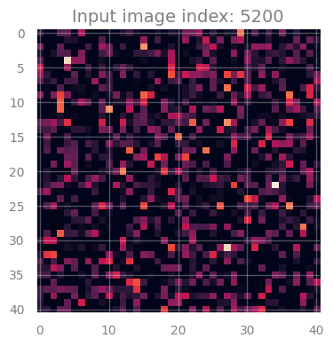
<div class="output stream highlight-myst-ansi notranslate"><div class="highlight"><pre><span></span><span class=" -Color -Color-Bold">1/1</span> <span class=" -Color -Color-Green">━━━━━━━━━━━━━━━━━━━━</span> <span class=" -Color -Color-Bold">0s</span> 54ms/step
</pre></div>
</div>
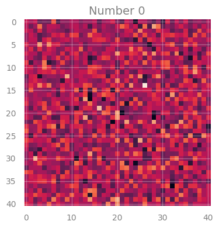
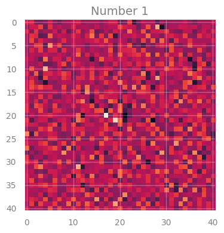
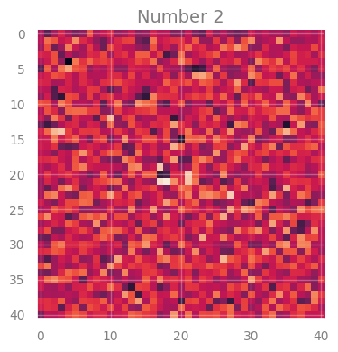
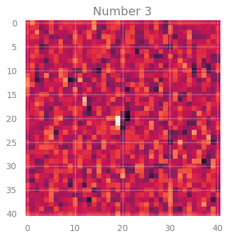
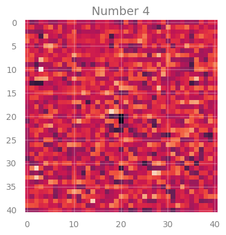
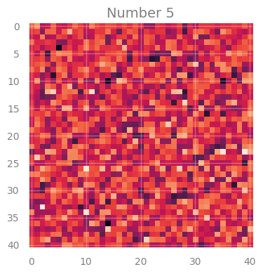
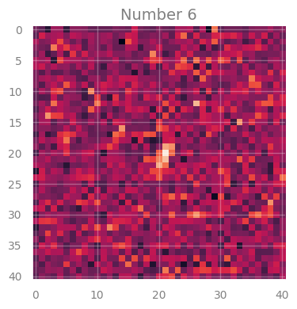
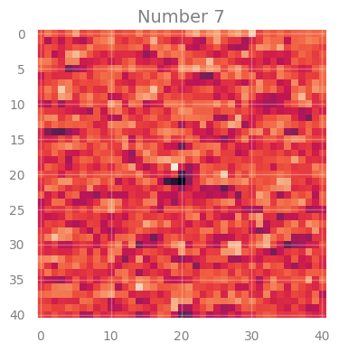
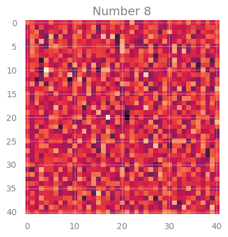
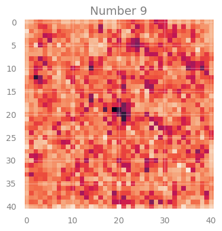
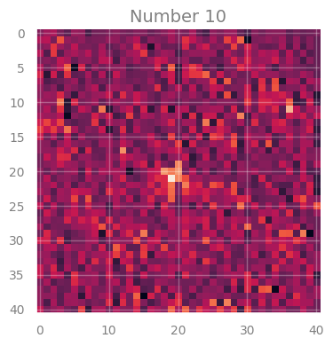
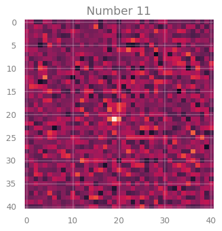
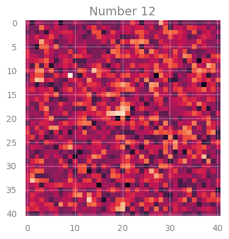
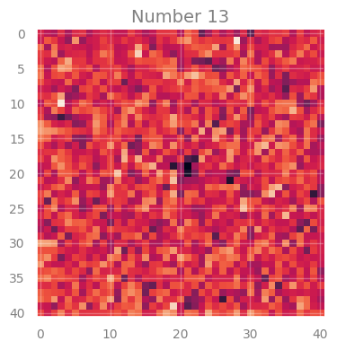
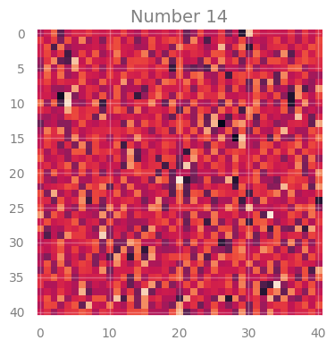
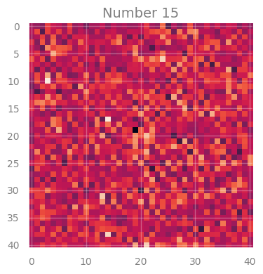
</div>
</div>
</section>
</section>
<hr class="docutils" />
<section class="tex2jax_ignore mathjax_ignore" id="solutions">
<h1>Solutions<a class="headerlink" href="#solutions" title="Link to this heading">#</a></h1>
<div class="alert alert-danger" role="alert" style="border-radius: 8px; padding: 10px;">
<p><b>[Solution below]</b></p>
</div><div class="cell docutils container">
<div class="cell_input docutils container">
<div class="highlight-ipython3 notranslate"><div class="highlight"><pre><span></span><span class="c1"># using two times the train_test_split to get initially </span>
<span class="c1"># the test sample and then train and validation.</span>
<span class="c1"># </span>
<span class="c1"># you can use random_state if you want to reproduce the same exact splits</span>
<span class="c1"># and shuffle if you want to mix the data before splits</span>

<span class="n">X_train_full</span><span class="p">,</span> <span class="n">X_test_img</span><span class="p">,</span> <span class="n">y_train_full_lbl</span><span class="p">,</span> <span class="n">y_test_lbl</span> <span class="o">=</span> <span class="n">train_test_split</span><span class="p">(</span>
        <span class="n">images</span> <span class="p">,</span> <span class="n">galaxy_labels</span><span class="p">,</span> <span class="n">test_size</span><span class="o">=</span><span class="mf">0.95</span><span class="p">)</span> <span class="c1">#, shuffle = True, random_state=42)</span>

<span class="c1"># split into train and validation</span>
<span class="n">X_train_img</span><span class="p">,</span> <span class="n">X_valid_img</span><span class="p">,</span> <span class="n">y_train_lbl</span><span class="p">,</span> <span class="n">y_valid_lbl</span> <span class="o">=</span> <span class="n">train_test_split</span><span class="p">(</span>
        <span class="n">X_train_full</span> <span class="p">,</span> <span class="n">y_train_full_lbl</span> <span class="p">,</span> <span class="n">test_size</span><span class="o">=</span><span class="mf">0.3</span><span class="p">)</span> <span class="c1">#, shuffle = True, random_state=24 )</span>

<span class="nb">print</span><span class="p">(</span><span class="sa">f</span><span class="s1">&#39;From </span><span class="si">{</span><span class="nb">len</span><span class="p">(</span><span class="n">images</span><span class="p">)</span><span class="si">}</span><span class="s1"> images, we use as:&#39;</span><span class="p">)</span>
<span class="nb">print</span><span class="p">(</span><span class="sa">f</span><span class="s1">&#39;test: </span><span class="se">\t\t</span><span class="s1"> </span><span class="si">{</span><span class="nb">len</span><span class="p">(</span><span class="n">X_test_img</span><span class="p">)</span><span class="si">}</span><span class="s1">&#39;</span><span class="p">)</span>
<span class="nb">print</span><span class="p">(</span><span class="sa">f</span><span class="s1">&#39;train: </span><span class="se">\t\t</span><span class="s1">  </span><span class="si">{</span><span class="nb">len</span><span class="p">(</span><span class="n">X_train_img</span><span class="p">)</span><span class="si">}</span><span class="s1">&#39;</span><span class="p">)</span>
<span class="nb">print</span><span class="p">(</span><span class="sa">f</span><span class="s1">&#39;validation:</span><span class="se">\t</span><span class="s1">  </span><span class="si">{</span><span class="nb">len</span><span class="p">(</span><span class="n">X_valid_img</span><span class="p">)</span><span class="si">}</span><span class="s1">&#39;</span><span class="p">)</span>

<span class="c1"># NOTE: this is a data manipulation as keras needs the number of objects </span>
<span class="c1"># with properties at each &quot;channel&quot;, and their correspoding number. </span>
<span class="c1"># As keras thinks of images as RGB it uses 3 as last number. </span>
<span class="c1"># To avoid keras to assume anything add specifically &#39;,1&#39; at the end.</span>

<span class="n">X_train</span> <span class="o">=</span> <span class="n">X_train_img</span><span class="o">.</span><span class="n">reshape</span><span class="p">(</span><span class="nb">len</span><span class="p">(</span><span class="n">X_train_img</span><span class="p">),</span> <span class="n">images</span><span class="o">.</span><span class="n">shape</span><span class="p">[</span><span class="mi">1</span><span class="p">],</span><span class="n">images</span><span class="o">.</span><span class="n">shape</span><span class="p">[</span><span class="mi">2</span><span class="p">],</span><span class="n">images</span><span class="o">.</span><span class="n">shape</span><span class="p">[</span><span class="mi">3</span><span class="p">],</span><span class="mi">1</span><span class="p">)</span>
<span class="n">X_valid</span> <span class="o">=</span> <span class="n">X_valid_img</span><span class="o">.</span><span class="n">reshape</span><span class="p">(</span><span class="nb">len</span><span class="p">(</span><span class="n">X_valid_img</span><span class="p">),</span> <span class="n">images</span><span class="o">.</span><span class="n">shape</span><span class="p">[</span><span class="mi">1</span><span class="p">],</span><span class="n">images</span><span class="o">.</span><span class="n">shape</span><span class="p">[</span><span class="mi">2</span><span class="p">],</span><span class="n">images</span><span class="o">.</span><span class="n">shape</span><span class="p">[</span><span class="mi">3</span><span class="p">],</span><span class="mi">1</span><span class="p">)</span>
<span class="n">X_test</span>  <span class="o">=</span> <span class="n">X_test_img</span><span class="o">.</span><span class="n">reshape</span><span class="p">(</span><span class="nb">len</span><span class="p">(</span><span class="n">X_test_img</span><span class="p">),</span> <span class="n">images</span><span class="o">.</span><span class="n">shape</span><span class="p">[</span><span class="mi">1</span><span class="p">],</span><span class="n">images</span><span class="o">.</span><span class="n">shape</span><span class="p">[</span><span class="mi">2</span><span class="p">],</span><span class="n">images</span><span class="o">.</span><span class="n">shape</span><span class="p">[</span><span class="mi">3</span><span class="p">],</span><span class="mi">1</span><span class="p">)</span>


<span class="c1"># NOTE: converting labels to categorical representation, </span>
<span class="c1"># a vector whose position indicates its class</span>
<span class="c1"># 0: star, ---------------&gt; [1, 0, 0] </span>
<span class="c1"># 1: spiral galaxy, ------&gt; [0, 1, 0]</span>
<span class="c1"># 2: elliptical galaxy ---&gt; [0, 0, 1]   </span>
<span class="n">y_train</span> <span class="o">=</span> <span class="n">ult</span><span class="o">.</span><span class="n">to_categorical</span><span class="p">(</span><span class="n">y_train_lbl</span><span class="p">,</span><span class="n">num_classes</span><span class="o">=</span><span class="mi">3</span><span class="p">)</span>
<span class="n">y_valid</span> <span class="o">=</span> <span class="n">ult</span><span class="o">.</span><span class="n">to_categorical</span><span class="p">(</span><span class="n">y_valid_lbl</span><span class="p">,</span><span class="n">num_classes</span><span class="o">=</span><span class="mi">3</span><span class="p">)</span>
<span class="n">y_test</span>  <span class="o">=</span> <span class="n">ult</span><span class="o">.</span><span class="n">to_categorical</span><span class="p">(</span><span class="n">y_test_lbl</span><span class="p">,</span><span class="n">num_classes</span><span class="o">=</span><span class="mi">3</span><span class="p">)</span>
      
</pre></div>
</div>
</div>
<div class="cell_output docutils container">
<div class="output stream highlight-myst-ansi notranslate"><div class="highlight"><pre><span></span>From 10000 images, we use as:
test: 		 9500
train: 		  350
validation:	  150
</pre></div>
</div>
</div>
</div>
<div class="cell docutils container">
<div class="cell_input docutils container">
<div class="highlight-ipython3 notranslate"><div class="highlight"><pre><span></span><span class="n">inputs</span> <span class="o">=</span> <span class="n">Input</span><span class="p">(</span><span class="n">shape</span><span class="o">=</span><span class="p">(</span><span class="n">images</span><span class="o">.</span><span class="n">shape</span><span class="p">[</span><span class="mi">1</span><span class="p">],</span> <span class="n">images</span><span class="o">.</span><span class="n">shape</span><span class="p">[</span><span class="mi">2</span><span class="p">],</span> <span class="n">images</span><span class="o">.</span><span class="n">shape</span><span class="p">[</span><span class="mi">3</span><span class="p">],</span> <span class="mi">1</span><span class="p">))</span>

<span class="n">x</span> <span class="o">=</span> <span class="n">Conv3D</span><span class="p">(</span><span class="mi">16</span><span class="p">,</span>   <span class="p">(</span><span class="mi">3</span><span class="p">,</span><span class="mi">3</span><span class="p">,</span><span class="mi">2</span><span class="p">),</span> <span class="n">strides</span><span class="o">=</span><span class="p">(</span><span class="mi">1</span><span class="p">,</span> <span class="mi">1</span><span class="p">,</span> <span class="mi">1</span><span class="p">),</span> <span class="n">padding</span><span class="o">=</span><span class="s1">&#39;same&#39;</span><span class="p">)(</span><span class="n">inputs</span><span class="p">)</span>
<span class="n">x</span> <span class="o">=</span> <span class="n">Activation</span><span class="p">(</span><span class="s1">&#39;relu&#39;</span><span class="p">)(</span><span class="n">x</span><span class="p">)</span>
<span class="n">x</span> <span class="o">=</span> <span class="n">MaxPooling3D</span><span class="p">(</span><span class="n">pool_size</span><span class="o">=</span><span class="p">(</span><span class="mi">3</span><span class="p">,</span><span class="mi">3</span><span class="p">,</span><span class="mi">1</span><span class="p">),</span> <span class="n">strides</span><span class="o">=</span><span class="p">(</span><span class="mi">2</span><span class="p">,</span><span class="mi">2</span><span class="p">,</span><span class="mi">1</span><span class="p">),</span> <span class="n">padding</span><span class="o">=</span><span class="s1">&#39;same&#39;</span><span class="p">)(</span><span class="n">x</span><span class="p">)</span>

<span class="n">x</span> <span class="o">=</span> <span class="n">Conv3D</span><span class="p">(</span><span class="mi">32</span><span class="p">,</span>  <span class="p">(</span><span class="mi">3</span><span class="p">,</span><span class="mi">3</span><span class="p">,</span><span class="mi">2</span><span class="p">),</span> <span class="n">strides</span><span class="o">=</span><span class="p">(</span><span class="mi">1</span><span class="p">,</span> <span class="mi">1</span><span class="p">,</span> <span class="mi">1</span><span class="p">),</span> <span class="n">padding</span><span class="o">=</span><span class="s1">&#39;same&#39;</span><span class="p">)(</span><span class="n">x</span><span class="p">)</span>
<span class="n">x</span> <span class="o">=</span> <span class="n">Activation</span><span class="p">(</span><span class="s1">&#39;relu&#39;</span><span class="p">)(</span><span class="n">x</span><span class="p">)</span>
<span class="n">x</span> <span class="o">=</span> <span class="n">MaxPooling3D</span><span class="p">(</span><span class="n">pool_size</span><span class="o">=</span><span class="p">(</span><span class="mi">3</span><span class="p">,</span><span class="mi">3</span><span class="p">,</span><span class="mi">1</span><span class="p">),</span> <span class="n">strides</span><span class="o">=</span><span class="p">(</span><span class="mi">2</span><span class="p">,</span><span class="mi">2</span><span class="p">,</span><span class="mi">1</span><span class="p">),</span> <span class="n">padding</span><span class="o">=</span><span class="s1">&#39;same&#39;</span><span class="p">)(</span><span class="n">x</span><span class="p">)</span>

<span class="n">x</span> <span class="o">=</span> <span class="n">Conv3D</span><span class="p">(</span><span class="mi">128</span><span class="p">,</span>  <span class="p">(</span><span class="mi">3</span><span class="p">,</span><span class="mi">3</span><span class="p">,</span><span class="mi">2</span><span class="p">),</span> <span class="n">strides</span><span class="o">=</span><span class="p">(</span><span class="mi">1</span><span class="p">,</span> <span class="mi">1</span><span class="p">,</span> <span class="mi">1</span><span class="p">),</span> <span class="n">padding</span><span class="o">=</span><span class="s1">&#39;same&#39;</span><span class="p">)(</span><span class="n">x</span><span class="p">)</span>
<span class="n">x</span> <span class="o">=</span> <span class="n">Activation</span><span class="p">(</span><span class="s1">&#39;relu&#39;</span><span class="p">)(</span><span class="n">x</span><span class="p">)</span>
<span class="n">x</span> <span class="o">=</span> <span class="n">MaxPooling3D</span><span class="p">(</span><span class="n">pool_size</span><span class="o">=</span><span class="p">(</span><span class="mi">3</span><span class="p">,</span><span class="mi">3</span><span class="p">,</span><span class="mi">1</span><span class="p">),</span> <span class="n">strides</span><span class="o">=</span><span class="p">(</span><span class="mi">2</span><span class="p">,</span><span class="mi">2</span><span class="p">,</span><span class="mi">1</span><span class="p">),</span> <span class="n">padding</span><span class="o">=</span><span class="s1">&#39;same&#39;</span><span class="p">)(</span><span class="n">x</span><span class="p">)</span>

<span class="c1"># x = Conv3D(256,  (3,3,2), strides=(1, 1, 1), padding=&#39;same&#39;)(x)</span>
<span class="c1"># x = Activation(&#39;relu&#39;)(x)</span>
<span class="c1"># x = MaxPooling3D(pool_size=(3,3,1), strides=(2,2,1), padding=&#39;same&#39;)(x)</span>

<span class="n">x</span> <span class="o">=</span> <span class="n">Dropout</span><span class="p">(</span><span class="mf">0.3</span><span class="p">)(</span><span class="n">x</span><span class="p">)</span>
<span class="n">x</span> <span class="o">=</span> <span class="n">Flatten</span><span class="p">()(</span><span class="n">x</span><span class="p">)</span>

<span class="n">x</span> <span class="o">=</span> <span class="n">Dense</span><span class="p">(</span><span class="mi">32</span><span class="p">,</span> <span class="n">activation</span><span class="o">=</span><span class="s1">&#39;relu&#39;</span><span class="p">)(</span><span class="n">x</span><span class="p">)</span>
<span class="n">x</span> <span class="o">=</span> <span class="n">Dense</span><span class="p">(</span><span class="mi">8</span><span class="p">,</span> <span class="n">activation</span><span class="o">=</span><span class="s1">&#39;relu&#39;</span><span class="p">)(</span><span class="n">x</span><span class="p">)</span>
<span class="n">Dn0</span> <span class="o">=</span> <span class="n">Dense</span><span class="p">(</span><span class="mi">3</span><span class="p">,</span> <span class="n">activation</span><span class="o">=</span><span class="s1">&#39;softmax&#39;</span><span class="p">)(</span><span class="n">x</span><span class="p">)</span>

<span class="n">my_model</span> <span class="o">=</span> <span class="n">Model</span><span class="p">(</span><span class="n">inputs</span><span class="o">=</span><span class="p">[</span><span class="n">inputs</span><span class="p">],</span> <span class="n">outputs</span><span class="o">=</span><span class="p">[</span><span class="n">Dn0</span><span class="p">])</span>
</pre></div>
</div>
</div>
</div>
<div class="cell docutils container">
<div class="cell_input docutils container">
<div class="highlight-ipython3 notranslate"><div class="highlight"><pre><span></span><span class="n">my_model</span><span class="o">.</span><span class="n">compile</span><span class="p">(</span><span class="n">loss</span><span class="o">=</span><span class="s1">&#39;categorical_crossentropy&#39;</span><span class="p">,</span> 
                 <span class="n">optimizer</span><span class="o">=</span><span class="n">Adam</span><span class="p">(</span><span class="n">learning_rate</span><span class="o">=</span><span class="mf">1e-4</span><span class="p">),</span> 
                 <span class="n">metrics</span> <span class="o">=</span><span class="p">[</span><span class="s1">&#39;categorical_accuracy&#39;</span><span class="p">])</span>
<span class="n">my_model</span><span class="o">.</span><span class="n">summary</span><span class="p">()</span>
</pre></div>
</div>
</div>
<div class="cell_output docutils container">
<div class="output text_html"><pre style="white-space:pre;overflow-x:auto;line-height:normal;font-family:Menlo,'DejaVu Sans Mono',consolas,'Courier New',monospace"><span style="font-weight: bold">Model: "functional_8"</span>
</pre>
</div><div class="output text_html"><pre style="white-space:pre;overflow-x:auto;line-height:normal;font-family:Menlo,'DejaVu Sans Mono',consolas,'Courier New',monospace">┏━━━━━━━━━━━━━━━━━━━━━━━━━━━━━━━━━┳━━━━━━━━━━━━━━━━━━━━━━━━┳━━━━━━━━━━━━━━━┓
┃<span style="font-weight: bold"> Layer (type)                    </span>┃<span style="font-weight: bold"> Output Shape           </span>┃<span style="font-weight: bold">       Param # </span>┃
┡━━━━━━━━━━━━━━━━━━━━━━━━━━━━━━━━━╇━━━━━━━━━━━━━━━━━━━━━━━━╇━━━━━━━━━━━━━━━┩
│ input_layer_7 (<span style="color: #0087ff; text-decoration-color: #0087ff">InputLayer</span>)      │ (<span style="color: #00d7ff; text-decoration-color: #00d7ff">None</span>, <span style="color: #00af00; text-decoration-color: #00af00">41</span>, <span style="color: #00af00; text-decoration-color: #00af00">41</span>, <span style="color: #00af00; text-decoration-color: #00af00">3</span>, <span style="color: #00af00; text-decoration-color: #00af00">1</span>)   │             <span style="color: #00af00; text-decoration-color: #00af00">0</span> │
├─────────────────────────────────┼────────────────────────┼───────────────┤
│ conv3d_23 (<span style="color: #0087ff; text-decoration-color: #0087ff">Conv3D</span>)              │ (<span style="color: #00d7ff; text-decoration-color: #00d7ff">None</span>, <span style="color: #00af00; text-decoration-color: #00af00">41</span>, <span style="color: #00af00; text-decoration-color: #00af00">41</span>, <span style="color: #00af00; text-decoration-color: #00af00">3</span>, <span style="color: #00af00; text-decoration-color: #00af00">16</span>)  │           <span style="color: #00af00; text-decoration-color: #00af00">304</span> │
├─────────────────────────────────┼────────────────────────┼───────────────┤
│ activation_23 (<span style="color: #0087ff; text-decoration-color: #0087ff">Activation</span>)      │ (<span style="color: #00d7ff; text-decoration-color: #00d7ff">None</span>, <span style="color: #00af00; text-decoration-color: #00af00">41</span>, <span style="color: #00af00; text-decoration-color: #00af00">41</span>, <span style="color: #00af00; text-decoration-color: #00af00">3</span>, <span style="color: #00af00; text-decoration-color: #00af00">16</span>)  │             <span style="color: #00af00; text-decoration-color: #00af00">0</span> │
├─────────────────────────────────┼────────────────────────┼───────────────┤
│ max_pooling3d_23 (<span style="color: #0087ff; text-decoration-color: #0087ff">MaxPooling3D</span>) │ (<span style="color: #00d7ff; text-decoration-color: #00d7ff">None</span>, <span style="color: #00af00; text-decoration-color: #00af00">21</span>, <span style="color: #00af00; text-decoration-color: #00af00">21</span>, <span style="color: #00af00; text-decoration-color: #00af00">3</span>, <span style="color: #00af00; text-decoration-color: #00af00">16</span>)  │             <span style="color: #00af00; text-decoration-color: #00af00">0</span> │
├─────────────────────────────────┼────────────────────────┼───────────────┤
│ conv3d_24 (<span style="color: #0087ff; text-decoration-color: #0087ff">Conv3D</span>)              │ (<span style="color: #00d7ff; text-decoration-color: #00d7ff">None</span>, <span style="color: #00af00; text-decoration-color: #00af00">21</span>, <span style="color: #00af00; text-decoration-color: #00af00">21</span>, <span style="color: #00af00; text-decoration-color: #00af00">3</span>, <span style="color: #00af00; text-decoration-color: #00af00">32</span>)  │         <span style="color: #00af00; text-decoration-color: #00af00">9,248</span> │
├─────────────────────────────────┼────────────────────────┼───────────────┤
│ activation_24 (<span style="color: #0087ff; text-decoration-color: #0087ff">Activation</span>)      │ (<span style="color: #00d7ff; text-decoration-color: #00d7ff">None</span>, <span style="color: #00af00; text-decoration-color: #00af00">21</span>, <span style="color: #00af00; text-decoration-color: #00af00">21</span>, <span style="color: #00af00; text-decoration-color: #00af00">3</span>, <span style="color: #00af00; text-decoration-color: #00af00">32</span>)  │             <span style="color: #00af00; text-decoration-color: #00af00">0</span> │
├─────────────────────────────────┼────────────────────────┼───────────────┤
│ max_pooling3d_24 (<span style="color: #0087ff; text-decoration-color: #0087ff">MaxPooling3D</span>) │ (<span style="color: #00d7ff; text-decoration-color: #00d7ff">None</span>, <span style="color: #00af00; text-decoration-color: #00af00">11</span>, <span style="color: #00af00; text-decoration-color: #00af00">11</span>, <span style="color: #00af00; text-decoration-color: #00af00">3</span>, <span style="color: #00af00; text-decoration-color: #00af00">32</span>)  │             <span style="color: #00af00; text-decoration-color: #00af00">0</span> │
├─────────────────────────────────┼────────────────────────┼───────────────┤
│ conv3d_25 (<span style="color: #0087ff; text-decoration-color: #0087ff">Conv3D</span>)              │ (<span style="color: #00d7ff; text-decoration-color: #00d7ff">None</span>, <span style="color: #00af00; text-decoration-color: #00af00">11</span>, <span style="color: #00af00; text-decoration-color: #00af00">11</span>, <span style="color: #00af00; text-decoration-color: #00af00">3</span>, <span style="color: #00af00; text-decoration-color: #00af00">128</span>) │        <span style="color: #00af00; text-decoration-color: #00af00">73,856</span> │
├─────────────────────────────────┼────────────────────────┼───────────────┤
│ activation_25 (<span style="color: #0087ff; text-decoration-color: #0087ff">Activation</span>)      │ (<span style="color: #00d7ff; text-decoration-color: #00d7ff">None</span>, <span style="color: #00af00; text-decoration-color: #00af00">11</span>, <span style="color: #00af00; text-decoration-color: #00af00">11</span>, <span style="color: #00af00; text-decoration-color: #00af00">3</span>, <span style="color: #00af00; text-decoration-color: #00af00">128</span>) │             <span style="color: #00af00; text-decoration-color: #00af00">0</span> │
├─────────────────────────────────┼────────────────────────┼───────────────┤
│ max_pooling3d_25 (<span style="color: #0087ff; text-decoration-color: #0087ff">MaxPooling3D</span>) │ (<span style="color: #00d7ff; text-decoration-color: #00d7ff">None</span>, <span style="color: #00af00; text-decoration-color: #00af00">6</span>, <span style="color: #00af00; text-decoration-color: #00af00">6</span>, <span style="color: #00af00; text-decoration-color: #00af00">3</span>, <span style="color: #00af00; text-decoration-color: #00af00">128</span>)   │             <span style="color: #00af00; text-decoration-color: #00af00">0</span> │
├─────────────────────────────────┼────────────────────────┼───────────────┤
│ dropout_8 (<span style="color: #0087ff; text-decoration-color: #0087ff">Dropout</span>)             │ (<span style="color: #00d7ff; text-decoration-color: #00d7ff">None</span>, <span style="color: #00af00; text-decoration-color: #00af00">6</span>, <span style="color: #00af00; text-decoration-color: #00af00">6</span>, <span style="color: #00af00; text-decoration-color: #00af00">3</span>, <span style="color: #00af00; text-decoration-color: #00af00">128</span>)   │             <span style="color: #00af00; text-decoration-color: #00af00">0</span> │
├─────────────────────────────────┼────────────────────────┼───────────────┤
│ flatten_7 (<span style="color: #0087ff; text-decoration-color: #0087ff">Flatten</span>)             │ (<span style="color: #00d7ff; text-decoration-color: #00d7ff">None</span>, <span style="color: #00af00; text-decoration-color: #00af00">13824</span>)          │             <span style="color: #00af00; text-decoration-color: #00af00">0</span> │
├─────────────────────────────────┼────────────────────────┼───────────────┤
│ dense_21 (<span style="color: #0087ff; text-decoration-color: #0087ff">Dense</span>)                │ (<span style="color: #00d7ff; text-decoration-color: #00d7ff">None</span>, <span style="color: #00af00; text-decoration-color: #00af00">32</span>)             │       <span style="color: #00af00; text-decoration-color: #00af00">442,400</span> │
├─────────────────────────────────┼────────────────────────┼───────────────┤
│ dense_22 (<span style="color: #0087ff; text-decoration-color: #0087ff">Dense</span>)                │ (<span style="color: #00d7ff; text-decoration-color: #00d7ff">None</span>, <span style="color: #00af00; text-decoration-color: #00af00">8</span>)              │           <span style="color: #00af00; text-decoration-color: #00af00">264</span> │
├─────────────────────────────────┼────────────────────────┼───────────────┤
│ dense_23 (<span style="color: #0087ff; text-decoration-color: #0087ff">Dense</span>)                │ (<span style="color: #00d7ff; text-decoration-color: #00d7ff">None</span>, <span style="color: #00af00; text-decoration-color: #00af00">3</span>)              │            <span style="color: #00af00; text-decoration-color: #00af00">27</span> │
└─────────────────────────────────┴────────────────────────┴───────────────┘
</pre>
</div><div class="output text_html"><pre style="white-space:pre;overflow-x:auto;line-height:normal;font-family:Menlo,'DejaVu Sans Mono',consolas,'Courier New',monospace"><span style="font-weight: bold"> Total params: </span><span style="color: #00af00; text-decoration-color: #00af00">526,099</span> (2.01 MB)
</pre>
</div><div class="output text_html"><pre style="white-space:pre;overflow-x:auto;line-height:normal;font-family:Menlo,'DejaVu Sans Mono',consolas,'Courier New',monospace"><span style="font-weight: bold"> Trainable params: </span><span style="color: #00af00; text-decoration-color: #00af00">526,099</span> (2.01 MB)
</pre>
</div><div class="output text_html"><pre style="white-space:pre;overflow-x:auto;line-height:normal;font-family:Menlo,'DejaVu Sans Mono',consolas,'Courier New',monospace"><span style="font-weight: bold"> Non-trainable params: </span><span style="color: #00af00; text-decoration-color: #00af00">0</span> (0.00 B)
</pre>
</div></div>
</div>
<div class="cell docutils container">
<div class="cell_input docutils container">
<div class="highlight-ipython3 notranslate"><div class="highlight"><pre><span></span><span class="n">start_time</span> <span class="o">=</span> <span class="n">time</span><span class="o">.</span><span class="n">time</span><span class="p">()</span> 
                                                    
<span class="n">history</span><span class="o">=</span><span class="n">my_model</span><span class="o">.</span><span class="n">fit</span><span class="p">(</span> <span class="n">X_train</span> <span class="p">,</span> <span class="n">y_train</span> <span class="p">,</span> 
                    <span class="n">batch_size</span><span class="o">=</span> <span class="mi">64</span><span class="p">,</span> 
                    <span class="n">epochs</span><span class="o">=</span> <span class="mi">20</span><span class="p">,</span>
                    <span class="n">validation_data</span><span class="o">=</span><span class="p">[</span> <span class="n">X_valid</span> <span class="p">,</span> <span class="n">y_valid</span> <span class="p">],</span>
                    <span class="n">callbacks</span><span class="o">=</span><span class="p">[</span><span class="n">plot_losses</span><span class="p">],</span><span class="n">shuffle</span><span class="o">=</span><span class="kc">True</span><span class="p">)</span>

<span class="n">elapsed_time</span> <span class="o">=</span> <span class="n">time</span><span class="o">.</span><span class="n">time</span><span class="p">()</span> <span class="o">-</span> <span class="n">start_time</span>
<span class="n">time</span><span class="o">.</span><span class="n">strftime</span><span class="p">(</span><span class="s2">&quot;%H:%M:%S&quot;</span><span class="p">,</span> <span class="n">time</span><span class="o">.</span><span class="n">gmtime</span><span class="p">(</span><span class="n">elapsed_time</span><span class="p">))</span>
</pre></div>
</div>
</div>
<div class="cell_output docutils container">
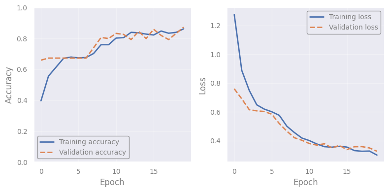
<div class="output stream highlight-myst-ansi notranslate"><div class="highlight"><pre><span></span>
<span class=" -Color -Color-Bold">6/6</span> <span class=" -Color -Color-Green">━━━━━━━━━━━━━━━━━━━━</span> <span class=" -Color -Color-Bold">6s</span> 1s/step - categorical_accuracy: 0.8623 - loss: 0.2983 - val_categorical_accuracy: 0.8733 - val_loss: 0.3274
</pre></div>
</div>
<div class="output text_plain highlight-myst-ansi notranslate"><div class="highlight"><pre><span></span>&#39;00:02:11&#39;
</pre></div>
</div>
</div>
</div>
<div class="cell docutils container">
<div class="cell_input docutils container">
<div class="highlight-ipython3 notranslate"><div class="highlight"><pre><span></span><span class="n">TO</span> <span class="o">=</span> <span class="nb">len</span><span class="p">(</span><span class="n">X_test</span><span class="p">)</span> <span class="c1"># or smaller...</span>

<span class="n">ls</span><span class="p">,</span><span class="n">acc</span><span class="o">=</span><span class="n">my_model</span><span class="o">.</span><span class="n">evaluate</span><span class="p">(</span> <span class="n">X_test</span><span class="p">[</span><span class="mi">0</span><span class="p">:</span><span class="n">TO</span><span class="p">],</span> <span class="n">y_test</span><span class="p">[</span><span class="mi">0</span><span class="p">:</span><span class="n">TO</span><span class="p">])</span>  
<span class="nb">print</span><span class="p">(</span><span class="s2">&quot;Loss value: </span><span class="si">%.2f</span><span class="s2">&quot;</span> <span class="o">%</span> <span class="p">(</span><span class="n">ls</span><span class="p">))</span>  
<span class="nb">print</span><span class="p">(</span><span class="s2">&quot;Accuracy: </span><span class="si">%.1f</span><span class="s2">&quot;</span> <span class="o">%</span> <span class="p">(</span><span class="n">acc</span><span class="o">*</span><span class="mi">100</span><span class="p">))</span>   
</pre></div>
</div>
</div>
<div class="cell_output docutils container">
<div class="output stream highlight-myst-ansi notranslate"><div class="highlight"><pre><span></span><span class=" -Color -Color-Bold">297/297</span> <span class=" -Color -Color-Green">━━━━━━━━━━━━━━━━━━━━</span> <span class=" -Color -Color-Bold">15s</span> 50ms/step - categorical_accuracy: 0.8443 - loss: 0.3229
Loss value: 0.33
Accuracy: 84.1
</pre></div>
</div>
</div>
</div>
<div class="alert alert-danger" role="alert" style="border-radius: 8px; padding: 10px;">
<p><b>[End of solution]</b></p>
</div><div class="cell docutils container">
<div class="cell_input docutils container">
<div class="highlight-ipython3 notranslate"><div class="highlight"><pre><span></span><span class="c1">###EOF</span>
</pre></div>
</div>
</div>
</div>
</section>

    <script type="text/x-thebe-config">
    {
        requestKernel: true,
        binderOptions: {
            repo: "binder-examples/jupyter-stacks-datascience",
            ref: "master",
        },
        codeMirrorConfig: {
            theme: "abcdef",
            mode: "astrostat25"
        },
        kernelOptions: {
            name: "astrostat25",
            path: "./Deep_Learning"
        },
        predefinedOutput: true
    }
    </script>
    <script>kernelName = 'astrostat25'</script>

                </article>
              

              
              
              
              
                <footer class="prev-next-footer d-print-none">
                  
<div class="prev-next-area">
    <a class="left-prev"
       href="Regression_workshop.html"
       title="previous page">
      <i class="fa-solid fa-angle-left"></i>
      <div class="prev-next-info">
        <p class="prev-next-subtitle">previous</p>
        <p class="prev-next-title">Regression with Deep Learning</p>
      </div>
    </a>
    <a class="right-next"
       href="../SBI/SBI_short.html"
       title="next page">
      <div class="prev-next-info">
        <p class="prev-next-subtitle">next</p>
        <p class="prev-next-title">Simulation Based Inference</p>
      </div>
      <i class="fa-solid fa-angle-right"></i>
    </a>
</div>
                </footer>
              
            </div>
            
            
              
                <dialog id="pst-secondary-sidebar-modal"></dialog>
                <div id="pst-secondary-sidebar" class="bd-sidebar-secondary bd-toc"><div class="sidebar-secondary-items sidebar-secondary__inner">


  <div class="sidebar-secondary-item"><div
    id="pst-page-navigation-heading-2"
    class="page-toc tocsection onthispage">
    <i class="fa-solid fa-list"></i> Contents
  </div>
  <nav id="pst-page-toc-nav" class="page-toc" aria-labelledby="pst-page-navigation-heading-2">
    <ul class="visible nav section-nav flex-column">
<li class="toc-h1 nav-item toc-entry"><a class="reference internal nav-link" href="#">Convolutional Neural Networks</a><ul class="visible nav section-nav flex-column">
<li class="toc-h2 nav-item toc-entry"><a class="reference internal nav-link" href="#setup">Setup</a></li>
<li class="toc-h2 nav-item toc-entry"><a class="reference internal nav-link" href="#what-are-convolutional-neural-networks-cnn">What are Convolutional Neural Networks (CNN)</a></li>
<li class="toc-h2 nav-item toc-entry"><a class="reference internal nav-link" href="#example-of-cnn-architecture">Example of CNN architecture</a></li>
<li class="toc-h2 nav-item toc-entry"><a class="reference internal nav-link" href="#components">Components</a><ul class="nav section-nav flex-column">
<li class="toc-h3 nav-item toc-entry"><a class="reference internal nav-link" href="#convolutional-layers">Convolutional Layers</a></li>
<li class="toc-h3 nav-item toc-entry"><a class="reference internal nav-link" href="#activation-function">Activation function</a></li>
<li class="toc-h3 nav-item toc-entry"><a class="reference internal nav-link" href="#pooling">Pooling</a></li>
<li class="toc-h3 nav-item toc-entry"><a class="reference internal nav-link" href="#fully-connected-layer">Fully connected layer</a></li>
<li class="toc-h3 nav-item toc-entry"><a class="reference internal nav-link" href="#dropout">Dropout</a></li>
</ul>
</li>
<li class="toc-h2 nav-item toc-entry"><a class="reference internal nav-link" href="#example-classification-networks">Example classification networks</a></li>
<li class="toc-h2 nav-item toc-entry"><a class="reference internal nav-link" href="#visualization-of-layers">Visualization of layers</a></li>
<li class="toc-h2 nav-item toc-entry"><a class="reference internal nav-link" href="#one-hot-encoding">One-hot encoding</a></li>
<li class="toc-h2 nav-item toc-entry"><a class="reference internal nav-link" href="#on-learning-curves">On learning curves</a></li>
</ul>
</li>
<li class="toc-h1 nav-item toc-entry"><a class="reference internal nav-link" href="#galaxy-morphology-estimation">Galaxy morphology estimation</a><ul class="visible nav section-nav flex-column">
<li class="toc-h2 nav-item toc-entry"><a class="reference internal nav-link" href="#load-the-data">Load the data</a></li>
<li class="toc-h2 nav-item toc-entry"><a class="reference internal nav-link" href="#add-white-noise-to-observations">Add white noise to observations</a></li>
<li class="toc-h2 nav-item toc-entry"><a class="reference internal nav-link" href="#create-training-and-testing-validation-dataset">Create training and testing (validation) dataset</a></li>
<li class="toc-h2 nav-item toc-entry"><a class="reference internal nav-link" href="#define-network-layers-and-characteristics">Define network layers and characteristics</a></li>
<li class="toc-h2 nav-item toc-entry"><a class="reference internal nav-link" href="#train-the-network">Train the network</a></li>
<li class="toc-h2 nav-item toc-entry"><a class="reference internal nav-link" href="#check-performance">Check performance</a></li>
<li class="toc-h2 nav-item toc-entry"><a class="reference internal nav-link" href="#predict-label-for-particular-example">Predict label for particular example</a></li>
<li class="toc-h2 nav-item toc-entry"><a class="reference internal nav-link" href="#print-the-activations-for-particular-inputs">Print the activations for particular inputs</a></li>
</ul>
</li>
<li class="toc-h1 nav-item toc-entry"><a class="reference internal nav-link" href="#solutions">Solutions</a></li>
</ul>

  </nav></div>

</div></div>
              
            
          </div>
          <footer class="bd-footer-content">
            
<div class="bd-footer-content__inner container">
  
  <div class="footer-item">
    
<p class="component-author">
By AstroStat Academy
</p>

  </div>
  
  <div class="footer-item">
    

  <p class="copyright">
    
      © Copyright 2026.
      <br/>
    
  </p>

  </div>
  
  <div class="footer-item">
    
  </div>
  
  <div class="footer-item">
    
  </div>
  
</div>
          </footer>
        

      </main>
    </div>
  </div>
  
  <!-- Scripts loaded after <body> so the DOM is not blocked -->
  <script defer src="../_static/scripts/bootstrap.js?digest=8878045cc6db502f8baf"></script>
<script defer src="../_static/scripts/pydata-sphinx-theme.js?digest=8878045cc6db502f8baf"></script>

  <footer class="bd-footer">
  </footer>
  </body>
</html>